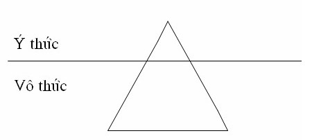

|
Ý, Tình, Thân Thích Trí Siêu 8. Vấn đề của thân Vô thường Thân thể con người rất mong manh yếu ớt, đụng nhẹ một chút là rách da chảy máu, đụng mạnh thì gãy xương mất mạng. Bên trong thân thể ngoài lục phủ ngũ tạng, gân cốt, máu thịt còn có vô số tế bào và đủ loại vi trùng, vi khuẩn. Chỉ cần một tế bào biến chứng là có thể ung thư, kháng thể yếu một chút thì vi khuẩn hoành hành, vi trùng xâm nhập. Khí hậu nóng lạnh bất thường thì cảm cúm nhức mỏi. Bản chất của thân là vô thường, biến đổi từng giây phút để đi tới tàn hoại. Nhờ vô thường nên đứa bé mới lớn lên, nhưng cũng vì vô thường mà con người trở nên già, bệnh, rồi chết. Nhờ vô thường nên một trẻ sơ sinh cũng có thể bệnh và chết trước khi thành người lớn. Do vô thường nên tất cả chúng ta đều có ba cái án treo, đó là: tai nạn, bệnh tật và cái chết. Ba cái này có thể xảy đến với chúng ta một cách bất ngờ, không hẹn ngày giờ. Khổ Có thân là có khổ! Vì có thân nên ta phải lo cho nó ăn uống, ngủ nghỉ, tắm rửa, phải đi làm kiếm tiền thuê nhà cho nó ở tránh mưa nắng, mua quần áo cho nó mặc đỡ lạnh. Chưa kể những phụ nữ phải bỏ ra hàng giờ trang điểm cho nó trước khi rời khỏi nhà. Khi thân bị bệnh thì đau đớn khổ sở, người vô phước không có tiền thì đành nằm chịu trận cho cơn đau hành hạ, người có tiền thì đi bác sĩ, nhà thương nhưng chưa chắc khỏi bệnh. Có người sạt nghiệp sau một cơn bệnh nặng. Chẳng cần chờ có bệnh mới khổ, ngay cả khi thân khỏe mạnh cũng khổ, bởi vì có thân là có cảm thọ: ngồi lâu thì ê, đứng lâu thì mỏi, đi nhiều thì mệt, nằm lâu thì tê, phải luôn luôn thay đổi tư thế cho đỡ khổ! Bệnh Trong ba cái khổ: già, bệnh, chết, thì bệnh là cái mà ta có thể tránh được. Tôi nói "có thể" chứ không chắc, vì bệnh có nhiều loại và nhiều nguyên nhân. Bệnh là một thân quả tức nghiệp quả của thân. Nếu đời trước thường sát sinh, đánh đập, não hại người khác về thể xác thì đời nay gặp quả báo bệnh hoạn, ốm yếu, đây là bệnh nghiệp. Tất cả bệnh đều do nghiệp mà thành nhưng có những nghiệp nhân đã tạo từ đời quá khứ và nghiệp nhân được tạo trong kiếp hiện tại, khi nhân chưa cho ra quả thì còn cơ hội chuyển nghiệp. Khi ta gieo một hạt táo vào lòng đất đâu phải nó mọc ra trái táo ngay! Hạt táo phải nẩy mầm từ từ lớn thành cây rồi vài năm sau mới có trái. Trong suốt thời gian trồng táo cần phải có sự bón phân, tưới nước, trừ sâu, nắng mưa điều hòa, những thứ này gọi là tăng thượng duyên, thì cây táo mới cho ra quả. Nếu gieo hạt táo mà bỏ mặc không chăm sóc, gặp thêm trời hạn hán, nghịch duyên thì hạt táo sẽ khô hoặc cây táo sẽ chết không thể cho ra quả được. Nhân phải gặp đủ duyên mới cho ra quả, có nhân mà không đủ duyên hoặc nghịch duyên thì quả không thành. Chúng ta không thể tự hào mình khỏe mạnh không bao giờ bệnh, bởi vì trong kiếp luân hồi vô thỉ không nhiều thì ít đều phạm sát sinh, không giết người thì hại vật nên trước sau gì cũng bị bệnh trả quả và khi đó uống thuốc tiên cũng không khỏi. Nhưng khi quả chưa trổ ra bệnh thì ta phải khôn ngoan tu hành, tạo duyên để hóa giải nghiệp bệnh như sám hối, giúp đỡ người già yếu bệnh tật, giữ gìn vệ sinh, tập luyện cho thân thể khỏe mạnh, ăn uống vệ sinh cẩn thận, không rượu chè hút sách, v.v... Nghiệp quả có thể diễn tả theo phương trình toán học như sau: N*D = Q, N là nhân, D là duyên, Q là quả. Khi đã tạo một nhân N, nếu ta cứ sống bình thường khi gặp đủ duyên D sẽ cho ra quả Q. Nhưng ngày nào chưa ra quả Q thì ta vẫn có thể tác động trên duyên như thêm vào một duyên mới D1 thì kết quả sẽ thay đổi: N*D*D1= Q1. Bệnh đương nhiên là kết quả của nghiệp, hoặc đời trước hoặc ngay trong đời này. Có nhiều người nhờ phước lành hoặc bệnh nghiệp chưa chín mùi nên thân thể khỏe mạnh, ít bệnh tật liền phung phí sức lực, ăn uống bậy bạ, uống rượu hút thuốc, chơi bời lung tung, làm việc quá sức, đây là đang tạo nhân bệnh trong kiếp hiện tại, đến khi bệnh nghiệp quá khứ trổ ra cộng thêm thân thể suy nhược thì vô phương cứu chữa. Anh Hai là một thể thao gia, hàng ngày thường chạy bộ, chơi quần vợt, không hút thuốc, uống rượu, cờ bạc trai gái, và biết làm phước bố thí kẻ nghèo. Nhưng bỗng nhiên anh bị ung thư máu (leucémie) phải vào nhà thương và điều trị hóa học (chimiothérapie). Cách ba ngày bác sĩ chích thuốc vào tủy của anh, mỗi lần như vậy là một cực hình, thân thể anh đau đớn run lên bần bật nhưng nhờ có một thân thể khỏe mạnh, cường tráng nên sau ba tháng anh khỏi bệnh. Đa số những người bị ung thư, nhất là ung thư máu, đều khó sống sót khi bị điều trị hóa học bởi vì cơ thể không đủ sức chịu đựng sự tàn phá của thuốc. Bệnh ung thư bộc phát bất ngờ không dự đoán trước được mặc dù anh là một thể thao gia, ta có thể gán đó là bệnh nghiệp, nhưng nếu anh vô phước không có tiền vào nhà thương thì anh sẽ chết, nếu được điều trị mà lúc bình thường anh trác táng thân thể suy nhược thì thuốc cũng vật anh chết. Kết luận, anh Hai tuy phải trả nghiệp nhưng nhờ có phước và trong hiện tại biết tập luyện thân thể nên kết quả được thay đổi, anh đã thoát chết. Đối với luật nhân quả có người hiểu lầm cho rằng bệnh là do nghiệp nên khỏi cần chữa trị, trả hết nghiệp thì bệnh sẽ hết, khỏi cần uống thuốc hay tập luyện thân thể. Có bệnh mà không chữa là một nhân duyên đưa đến chết yểu và chết oan. Nếu con bạn bị tai nạn mất máu mà bạn đứng đó nói rằng nó bị tai nạn như vậy là do nghiệp rồi không tìm cách cầm máu hoặc chở đi nhà thương thì nó sẽ ra sao? Nếu nghiệp hết thì máu sẽ tự động ngưng chảy, phải vậy chăng? Nếu bạn đã làm hết sức mình và bác sĩ cũng làm đủ mọi cách mà không cứu được nó thì lúc đó ta mới có thể đổ tại nghiệp! Có những người, chắc chưa nếm mùi bệnh khổ, đau đớn, rên la, quằn quại, liệt giường liệt chiếu, sống dở chết dở, nên đã ví Ta Bà là Tịnh Độ. Đây một là hạng điếc không sợ súng, hai là bồ tát lớn đã chứng ngộ không sợ sinh tử, đau nhức. Sinh ra ở cõi này có thân là có khổ, nhất là bệnh khổ. Khi nghe tin Hòa thượng này, Thượng tọa nọ bị bệnh nặng, nhiều người hỏi ngây thơ: "Quý thầy đó tu cao như vậy mà còn bị bệnh hả?" Họ tưởng "tu cao" là không còn bệnh, hoặc "tu cao" là có nội công thâm hậu như trong phim chưởng. Không ai tránh khỏi bệnh tật, ngay cả đức Phật và các vị A La Hán cũng vậy. Đức Phật đã bị bệnh kiết lỵ trước khi nhập niết bàn. Suy tư 1)
Ta đã làm gì để gây ra bệnh này? Nghiệp lực Trong Phật giáo có danh từ nghiệp (karma). Nghiệp có nghiệp nhân và nghiệp quả. Khi làm một hành động tốt sẽ cho ra kết quả lành gọi là phước nghiệp. Nếu đời trước làm nhiều việc ác qua thân, miệng, ý thì đời nay cái nghiệp đó trổ ra quả báo hoạn nạn đau khổ, gọi là tội nghiệp. Thi sĩ Nguyễn Du có nói: "Đã mang lấy nghiệp vào thân, cũng đừng trách lẫn trời gần trời xa", vì nghiệp là do chính mình tạo nên không thể than trời trách đất đuợc. Trong ngôn ngữ bình dân, nghiệp mang hai nghĩa là hành động và quả báo. Ngoài nghiệp nhân và nghiệp quả còn có một loại gọi là nghiệp lực, tức là sức mạnh của nghiệp. Chúng ta trôi lăn trong sinh tử luân hồi, tạo nhiều điều ác, chịu bao nhiêu đau khổ mà không cưỡng lại được cũng vì nghiệp lực. Khi mới sinh ra ta đâu có biết hút thuốc là gì? Lớn lên giao du với bạn bè hút sách rồi đâm ra nghiện ngập, mỗi ngày phải hút ít nhất vài điếu hay vài bao. Nếu không hút thì có một động lực nào đó sai khiến ta phải đi tìm thuốc để hút. Động lực vô hình này chính là nghiệp lực! Sau khi chết, cái gì dẫn ta đi đầu thai chỗ này chỗ kia? Cũng chính nghiệp lực dẫn ta đi đầu thai địa ngục hay thiên đàng. Điều trớ trêu ở đây là chính ta tạo nghiệp rồi sau đó trở thành nô lệ cho nghiệp lực, để nó nắm đầu sai sử. Tu hành là cố gắng vuợt thoát khỏi sự chi phối của nghiệp lực, ta có thể gọi đó là diệt nghiệp, giải nghiệp hay chuyển nghiệp đều được. Điều đầu tiên là phải ý thức xem mình có bị nghiệp lực sai sử hay không? Làm sao biết đuợc? Mỗi khi ta bị một cái gì thôi thúc, điều khiển mà không cưỡng lại được đó là dấu hiệu đang bị nghiệp lực lôi kéo! Tôi không muốn hút thuốc nữa mà nó cứ muốn hút, tôi không muốn ăn nhiều sợ mập nhưng nó cứ thèm ăn hoài, tôi không muốn nổi giận nữa vì nổi giận đã làm tôi mất việc nhưng nó vẫn cứ nổi giận! Nhiều lúc tôi biết không nên hành động như vậy nhưng đụng chuyện thì nó cứ làm tôi hành động như vậy! Nghiện Nghiện hay ghiền là một hình thức của nghiệp lực. Khi nghiện một cái gì thì ta bị cái đó sai sử, lôi kéo, thu hút. Nghiện có rất nhiều loại vì lục trần (sắc, thanh, hương, vị, xúc, pháp) có bao nhiêu thứ thì nghiện có bấy nhiêu loại. Có người nghiện ăn, nghiện nói, nghiện ngủ, nghiện hút thuốc, nghiện rượu, nghiện đồ ngọt, nghiện cờ bạc, nghiện máy vi tính (computer), nghiện làm việc (workaholic), v.v... Những thứ nghiện này không được liệt kê là phiền não, nhưng thực tế nghiện (dépendance, addiction) là một loại phiền não vì nó gây khổ đau. Trong ngũ dục, năm thứ ham muốn, có đề cập đến tiền, sắc đẹp, danh vọng, ăn, ngủ nhưng đó là nói tổng quát, vì ham muốn chưa nặng bằng nghiện. Chúng ta cần phân biệt rõ giữa: cần (need), thích (desire), và nghiện (addiction). Sống ở đời ai cũng cần tiền, cần tình dục, cần chức tước, cần ăn uống, cần ngủ nghỉ, nhưng nếu vượt lên trên trạng thái của cần một bậc thì trở thành thích: thích tiền, thích danh, thích sắc dục, thích ăn ngủ, v.v... đó là rơi vào ngũ dục. Khi ham thích đến mức lệ thuộc không có không được thì đó là nghiện. Rơi vào ngũ dục là phàm phu, rơi vào nghiện thì chẳng khác thú vật. Người tu tập sống thiểu dục nghĩa là ở trạng thái cần, đói cần ăn, khát cần uống, mệt cần ngủ, v.v... Sinh ra đời chúng ta đã là kẻ nô lệ rồi, nô lệ thể xác, nô lệ hoàn cảnh, nô lệ vật chất, nô lệ tình cảm, nô lệ vọng tưởng, bởi thế hãy cố gắng đừng mang thêm nhiều ách nô lệ khác nữa! Cảm thọ Cảm thọ là một uẩn (skandha) trong năm uẩn cấu tạo con người, vì thế ai cũng có cảm thọ. Trong kinh Nhiều Cảm Thọ[23] (Bahuvedaniyasutta) đức Phật có giảng về nhiều loại cảm thọ tùy trường hợp và đối tượng. Nhưng tựu chung ta có thể chia làm hai, ba hoặc năm loại cảm thọ. Hai loại cảm thọ là: thân thọ và tâm thọ. Ba loại cảm thọ là: khổ, lạc, xả. Năm loại cảm thọ là: khổ, ưu, lạc, hỷ, xả. Cảm thọ dễ chịu (lạc thọ), khó chịu (khổ thọ) thuộc về thân thọ. Cảm thọ buồn (ưu), vui (hỷ) thuộc về tâm thọ. Cảm thọ bình thường (xả thọ) thuộc cả thân lẫn tâm. Thân thọ là cảm thọ phát xuất từ thân như đói khát, nóng lạnh, đau nhức, hoặc no đủ, êm ấm, khoái lạc thể xác. Tâm thọ còn được gọi là "tình thọ" vì cảm thọ này phát xuất qua tình cảm: được ai yêu thương quý mến thì ta vui sướng, bị người chê bai, ghét bỏ thì ta buồn khổ. Có cảm thọ là có khổ. Đối với khổ thọ thì ta sợ hãi tránh né. Đối với lạc thọ thì ta thèm khát, bám víu, đi tìm. Đối với xả thọ thì ta nhàm chán đi tìm sự kích thích. Trong cuộc sống, mọi người đều loanh quanh tránh né khổ thọ và tìm cầu lạc thọ. Trong số lạc thọ, không gì ngoài việc ăn uống và nhục dục. Dù là triệu phú được ăn cao lương mỹ vị, no nê cách mấy đi nữa, chỉ sau vài giờ là bụng lại đói. Có tiền, giao hoan, vui đùa xác thịt ngày này sang ngày khác cũng không bao giờ thỏa mãn, giống như người khát uống nước muối, càng uống càng khát. Khoa học thường được đề cao như là cứu tinh của loài người, nhưng khoa học đem lại gì nếu không chỉ là tiện nghi vật chất, đáp ứng nhu cầu cảm thọ khoái lạc cho thân xác, kích thích lòng ham muốn tiêu thụ. Người tu hành cần phải tập làm chủ cảm thọ. Khi gặp khổ thọ về thân thì kiên nhẫn chịu đựng, tâm không lo buồn (ưu). Khi gặp lạc thọ thì biết ý thức sự may mắn hạnh phúc của mình và không chạy theo bám víu tìm kiếm nữa. Khi có xả thọ thì biết quán chiếu để biến xả thọ thành sự bình an hạnh phúc của tâm hồn. Đòi hỏi của thể xác Thân là chủ của tâm hay tâm là chủ của thân? Có lẽ đa số sẽ nghĩ tâm là chủ của thân, tâm nghĩ trước và thân làm theo sau. Nhưng trên thực tế nhiều khi ngược lại, tâm làm đầy tớ cho thân, khi thân đói quá thì tâm suy nghĩ trộm cắp để nuôi thân, thân bị nóng lạnh thì tâm phải lo mua quạt, mua sưởi. Thân xác có những đòi hỏi của nó mà ta không thể cưỡng lại được như ăn uống, ngủ nghỉ, bài tiết, tình dục, nóng lạnh, v.v... Khi đó tâm trở thành đầy tớ phục vụ cho ông chủ thân! Chẳng cần chờ đến lúc đói khát, nóng lạnh, hàng ngày chúng ta phải lo đi làm, kiếm tiền để làm gì? Có phải để nuôi thân không? Ai là chủ, ai là tớ? Tình dục Vì có thân xác, có cảm thọ nên người ta mới đi tìm tình dục. Tình dục (sexualité) là sự ham muốn nhục dục hay khoái cảm xác thịt. Loài vật có giống đực và giống cái, con người có nam và nữ do thể xác và bộ phận sinh dục khác nhau, nên thu hút và kích thích lẫn nhau. Đây là điều bình thường và tự nhiên của tạo hóa. Ở đời nguời ta lấy vợ lấy chồng cũng không ngoài mục đích thỏa mãn tình dục (và tình yêu). Phong tục xã hội chế ra hôn nhân cưới gả cũng để hợp thức hóa tình dục. Giới cấm tà dâm được chế ra để bảo vệ hạnh phúc gia đình hay để hạn chế tình dục bừa bãi? Ở Việt Nam xưa kia cưới gả không cần tình yêu, chỉ cần môn đăng hộ đối là đủ. Ở Tây phương ngày nay, hôn nhân mà không có tình dục (mariage non consommé) thì có quyền ly dị, vì tình dục quan trọng hơn tình yêu. Không ăn không uống thì chết, khi đủ ăn, đủ uống thì người ta nghĩ đến tình dục. Sự đòi hỏi tình dục có thể làm người ta mất nhân phẩm, xuống thấp ngang với thú vật. Tình dục không phải là một vấn đề quan trọng đối với người thường, nhưng nó là một trở ngại lớn cho những ai muốn thoát khỏi sinh tử luân hồi, vì nó làm con người trở thành nô lệ cho khoái cảm. Trong đạo thường dùng chữ sắc dục chứ không nói về tình dục. Sắc dục nghe thanh hơn tình dục nhưng cả hai gần như đồng nghĩa, vì cái này đưa đến cái kia. Sắc dục là ham muốn sắc đẹp, đàn ông ham muốn đàn bà đẹp, nhưng ham muốn đàn bà đẹp để làm gì? Để ngắm, để trưng rồi thôi ư? Sắc đẹp của người khác phái là sự hấp dẫn mạnh nhất, đức Phật có nói trong phẩm Sắc: "Ta không thấy một sắc nào khác, này các tỳ kheo, xâm chiếm và ngự trị tâm người đàn ông như sắc người đàn bà. Này các tỳ kheo, sắc người đàn bà xâm chiếm và ngự trị tâm người đàn ông" ..."Ta không thấy một sắc nào khác xâm chiếm và ngự trị tâm người đàn bà như sắc người đàn ông" ... (Tăng Chi bộ kinh I). Sinh ra ở đời ai cũng có tình dục, vì có chủng tử ái dục trong tâm, có cảm thọ và bộ phận sinh dục nơi thân. Muốn giải thoát sinh tử ta cần phải siêu việt tình dục, không còn thèm khát, ao ước sắc dục. Vượt qua bằng cách nào? Bằng cách đè nén chăng? (xem chương Vấn đề tình cảm). Tu hành không phải đè nén như lấy đá đè cỏ, đè nén gây ra mâu thuẫn nội tại và nhiều khi sinh bệnh. Tình dục cần được hiểu và chuyển hóa để trở thành một năng lượng giúp ta thêm sức mạnh và niềm vui sống. Nguồn gốc của tình dục nằm nơi tâm, nên phải từ tâm mà giải quyết. Ta đã có quan niệm gì, ý nghĩ gì về tình dục, sắc dục? Trong kinh dạy phải coi sắc dục như rắn độc, đó là kinh nói nhưng trong thâm tâm ta nói gì, nghĩ gì, phải thành thật với chính mình. Vì Ý đã nghĩ như thế nào mới hiện hành ra nơi Tình và Thân. Tình dục tuy là một vấn đề nhưng không nên quan trọng hóa làm nó trở thành một cái gì ghê gớm, tội lỗi phải đề phòng xua đuổi. Có hai điều làm tâm bị dính mắc, đó là ưa và ghét. Khi ưa cái gì tâm thường nghĩ đến cái đó và khi ghét cái gì tâm cũng nghĩ đến luôn. Tốt nhất là không ưa không ghét, đối cảnh vắng lặng, "bình thường tâm thị đạo". Giống như chuyện một chú tiểu đi tu từ nhỏ chưa bao giờ thấy đàn bà con gái. Một hôm có việc thầy dẫn chú xuống núi đến một làng nọ. Đi ngang thấy một cô gái đẹp đang giặt đồ bên bờ sông, thầy sợ chú bị cám dỗ nên nắm tay kéo chú đi nhanh và bảo chú đừng nhìn, coi chừng đó là "con cọp" ăn thịt người. Nhưng chẳng may, chú đã nhìn thấy "con cọp" rồi. Thầy sợ chú bị dính nên căn dặn thêm: "Con cọp đó dễ sợ lắm, bề ngoài thấy hiền nhưng bên trong đầy nanh vuốt ăn thịt người lúc nào không hay". Nghe thầy nói vậy nhưng chú lại thấy nó có vẻ dễ thương làm sao, suốt dọc đường hình ảnh "con cọp" cứ lởn vởn trong đầu chú. Về đến chùa chú cố gắng xua đuổi con cọp đó ra khỏi đầu nhưng càng đuổi nó càng hiện và cuối cùng chú tương tư "con cọp" luôn. Thấy chú biếng ăn, bỏ ngủ, lơ là tụng kinh niệm Phật, thầy gọi chú vào hỏi nguyên do thì chú thú thật là chú nhớ con cọp quá và muốn xuống núi để thấy lại nó! Câu chuyện tiếp tục ra sao thì để bạn đọc tưởng tượng lấy. Nếu tôi là thầy của chú, tôi sẽ cho chú thấy sự thật, cho chú đứng lại nhìn cô gái và nói cho chú biết đó là một người nữ, khác phái chứ không phải con cọp. Sau đó cho chú thấy những cô gái khác đẹp hơn để cuối cùng tự chú nhận thấy một người con gái không có gì đặc biệt, cũng bình thường như bao nhiêu người khác mà thôi. Tâm không động (vắng lặng) vì thấy cảnh bình thường. Địa ngục Trong các tôn giáo đều có nói đến địa ngục, đó là nơi mà tội nhân phải đọa vào sau khi chết để chịu những hình phạt ghê gớm. Địa ngục có hay không? Nếu có thì ở đâu? Ở dưới lòng đất hay ở một nơi nào trong không gian vũ trụ? Trước khi trả lời những câu trên thì ta cần xác định lại chữ địa ngục (enfer, hell), vì có những người vô thần, vô đạo không tin có địa ngục. Địa là đất, ngục là ngục tù, nghĩa đen là ngục tù ở trong lòng đất, nghĩa bóng là nơi mà ta phải khổ sở đớn đau vì bị trừng phạt. Nếu nói theo nghĩa đen thì phải nhờ tới khoa học, nhờ các nhà bác học địa chất thám hiểm xem có ngục nào trong lòng đất không? Nhưng nếu đứng trên nghĩa bóng thì chúng ta có địa ngục trần gian, đó là những nhà tù, trại cải tạo và chiến trường, là những nơi người ta đánh đập, chém giết, tra tấn, hành hạ lẫn nhau. Do đó ta không cần phải chết đi mới biết có địa ngục hay không. Đạo Phật nói "Tam giới duy tâm, vạn pháp duy thức", ngay cả cảnh giới địa ngục cũng không nằm ngoài tâm. Khi tâm của ta đang sân hận, giận tức, muốn ăn tươi nuốt sống kẻ thù, muốn mắng chửi, đánh đập người làm ta khổ thì đó là ta đang sống trong địa ngục (vivre l'enfer, go through hell), hay nói cách khác là địa ngục đang hiện hữu ngay nơi ta. Mỗi khi bị thất tình lục dục, cảm xúc dày vò, tâm hồn bứt rứt thì đó cũng là đang sống trong địa ngục. Khi cơn dày vò nguôi ngoai, tâm hồn trở lại bình thường, an ổn thì ta thoát ra khỏi địa ngục. Ra vào địa ngục là như thế đó! Những người may mắn biết thế nào là đạo đức, biết học đạo, biết tu tâm sửa tánh, tập làm chủ thân tâm, học từ, bi, hỷ, xả, thì những người này mau thoát ra khỏi địa ngục. Trong kinh Phật, ngoài kinh Địa Tạng, có kinh Trung A Hàm thứ 30[24], phẩm Địa Ngục cũng tả rõ về cảnh giới địa ngục. "Trong địa ngục Đinh Sắt, ngục tốt đánh tội nhân văng lên bàn sắt nóng, căng thân thể tội nhân ra, dùng đinh đóng tay, đóng chân, đóng vào tim. Toàn thân bị đóng hết thảy 500 cái đinh. Họ đau đớn vô cùng, kêu la thảm thiết, nhưng vì tội lỗi cũ chưa hết, nên tội nhân không thể chết được", ..."Trong địa ngục Khát, ngục tốt bắt tội nhân nằm lên bàn sắt nóng, căng thân thể ra dùng móc sắt nóng cạy miệng tội nhân ra, lấy nước đồng sôi rót vào miệng đốt cháy cả môi lưỡi, từ yết hầu cho đến bụng, cháy suốt cả thân, không chỗ nào không cháy. Họ đau đớn vô cùng, kêu la thảm thiết. Nhưng vì tội lỗi cũ chưa hết, nên tội nhân không thể chết được". Ở trần gian chỉ cần đóng một cái đinh vào tim cũng đủ chết, nhưng ở địa ngục bị đóng tới 500 cái đinh mà không chết. Thêm nữa thời gian ở địa ngục rất lâu, một ngày một đêm ở địa ngục dài bằng mấy ngàn năm ở trần gian, do đó tội nhân phải tiếp tục sống để cảm thọ sự đau đớn. Tại sao có thể như vậy được? Anh Ba hồi xưa là Trung tá Không quân, sau năm 1975, anh bị bắt đi cải tạo và hành hạ đánh đập đủ thứ. Sau này được vợ con bảo lãnh sang Mỹ, tuy không còn ở trong tù nhưng lâu lâu anh vẫn nằm chiêm bao thấy mình còn ở trại cải tạo và đang bị tra tấn dã man. Đau đớn, rên siết đến mức kinh hoàng quá làm anh thức giấc mồ hôi chảy đầm đìa, tim đập mạnh, hơi thở hổn hển. Giả sử những lúc đang bị ác mộng như vậy mà anh không tỉnh dậy nổi thì sao? Thì anh sẽ tiếp tục "sống" trong cảnh địa ngục và sống mãi như thế cho đến khi nào anh được thức giấc. Khi thức giấc thì tức khắc anh thoát ra khỏi sự tra tấn. Làm sao thức giấc được? Thức giấc được là vì thời gian của giấc mơ (ác mộng) kia có hạn, và vì anh còn cái thân tứ đại là mạng căn chính. Nhưng nếu không còn thân xác nữa thì anh sẽ vĩnh viễn sống trong cơn ác mộng cho đến khi nào nó phai nhạt nhường chỗ lại cho một cơn mộng khác thì lúc đó anh mới thoát cảnh cực hình. Lâu lâu tôi ngủ trưa và có lúc bị "mặt trời đè", tôi cảm thấy như mình đã thức rồi mà không thể mở mắt hay nhúc nhích tay chân gì được hết. Lúc đó tôi muốn kêu to lên nhờ ai xung quanh đến lay tôi hoặc đập mạnh vào người để tôi tỉnh dậy nhưng vô hiệu. Tôi phải cố gắng vùng vẫy cựa quậy vài phút thì mới bừng tỉnh và mở mắt ra được. Tôi mở mắt ra được là nhờ còn thân xác này, nói theo cách khác là tâm hay thần thức của tôi còn có chỗ nương vào để biểu hiện (manifester). Nhưng một khi chết đi, thần thức rời khỏi xác thân thì không còn chỗ nương để có cơ hội thoát khỏi cảnh ác mộng? Và như thế sẽ phải sống trong ác mộng đó cho đến khi nào sức mạnh của nó phai nhạt thì ta mới thoát được. Sức mạnh của ác mộng chính là nghiệp lực, nếu nghiệp nặng (tội ác quá nhiều) thì thời gian sống trong ác mộng hay địa ngục sẽ rất dài (mấy ngàn năm), nếu nghiệp nhẹ thì cơn ác mộng sẽ chấm dứt sớm hơn. Có những trường hợp ngoại lệ là khi ta đang ở trong ác mộng, kêu la, hoảng hốt mà bên cạnh có một người nào biết đánh thức ta dậy hoặc lấy tay tát vào mặt vài cái cho ta thức giấc thì coi như người đó đã cứu ta ra khỏi địa ngục. Cũng vậy, nếu trong lúc sống ta có nhân duyên với Phật Pháp, biết niệm Phật A Di Đà, hoặc Quan Thế Âm Bồ Tát thì khi lâm vào cảnh giới trung ấm hay địa ngục, ta hoảng sợ biết kêu cứu đến các ngài thì do luật cảm ứng ta sẽ được đánh thức ra khỏi địa ngục. Vì địa ngục là một cảnh giới của tâm, trong đó ta không có xác thân tứ đại như bây giờ mà có một loại "ý sanh thân", tức một cái thân đúc kết từ tâm ý, giống y như cái thân của anh Ba đang bị đánh đập trong giấc mơ. Đặc biệt một điều là cảm xúc của những loại "ý sanh thân" này rất nhạy, cường độ của nó gấp trăm lần nên khi bị đánh đập thì đau đớn kinh khủng, và nếu sợ thì sợ kinh hồn. Đương nhiên khi bị đâm chém thì nó cảm thấy đau đớn, sợ hãi nhưng không bao giờ chết, vì đâu phải là xác thịt! Có cách nào thoát khỏi chăng? Như vừa nói ở trên, chúng ta phải tập ăn ở đạo đức, tu hành, biết nương tựa Tam Bảo, chư Phật và Bồ Tát. Ngoài ra nên thường suy tư quán chiếu như trong các Kinh Viên Giác, Kim Cang đã dạy, tập nhìn cuộc đời như mộng huyễn, tâm hồn an nhiên, không bám víu hay dính mắc, không ưa ghét, giận hờn, lo sợ, được như thế thì dù rơi vào địa ngục cũng còn lối thoát. Vì con đường ra hay vào địa ngục không phải bắt đầu sau khi chết mà đã bắt đầu ngay từ bây giờ. Trong lúc sống nếu ta khổ đau vì thương ghét, buồn giận, lo âu thì không có lý do gì sau khi chết lại được sung sướng hạnh phúc, bởi vì khổ đau hay sung sướng bắt nguồn từ trong tâm, còn sống hay chết chỉ là sự tàn hoại thay đổi của thân xác, không ngăn cản được giòng tâm thức trôi chảy bất tận.
-ooOoo-
9. Con đường chuyển hóa Tu hành có nhiều hình thức và trình độ, tựu chung người ta thường phân chia ra hai loại: tu phước và tu huệ. Tu phước là làm phước, bố thí cúng chùa, công quả, giúp đỡ tha nhân. Tu huệ là nghiên cứu kinh điển, học hỏi giáo lý, thiền định và quán chiếu. Phước và huệ đều cần thiết cho người tu nhưng chúng ta nên nhớ Đạo Phật là đạo cứu khổ, đức Phật chỉ dạy về khổ và con đường diệt khổ. Do đó nếu tu đúng theo đạo Phật thì phải hưởng được ít nhiều hương vị giải thoát, bớt khổ và hạnh phúc hơn. Muốn hết khổ chúng ta cần phải nhận diện và hiểu rõ tiến trình của phiền não, của Ý, Tình, Thân hay của vọng tưởng, vọng tình, vọng nghiệp, và tìm cách chuyển hóa chúng. Trong kinh Lăng Nghiêm có kể chuyện anh chàng Diễn Nhã Đạt Đa, một hôm soi gương thấy mặt mình hiện trong gương, rồi bỗng suy nghĩ cho là mình mất đầu (vọng tưởng), đâm ra hốt hoảng (vọng tình), chạy khắp nơi đi tìm cái đầu (vọng nghiệp). Anh Ba là người bạn thân của tôi hồi còn ở Trung Học. Sau khi lập gia đình, chúng tôi ít có dịp gặp lại nhau. Một hôm rảnh rang không đi làm, ngồi nhà suy nghĩ vẩn vơ, tôi chợt nhớ đến anh Ba (tưởng), rồi tự nhiên bao nhiêu kỷ niệm vui buồn xa xưa trào lên (tình), và tôi cảm thấy thèm gặp lại người bạn cũ hết sức, thế là tôi đứng dậy cầm điện thoại gọi anh Ba tới chơi (nghiệp). Tiến trình chuyển hóa Trong quá trình hành đạo, tôi thấy nhiều Phật tử đến chùa kể lể nỗi khổ của mình và mong được thầy hay cô chỉ dạy cách tu. Nhưng phần đông những câu trả lời đều tương tựa như sau: - ráng về tụng kinh, niệm Phật nhiều sẽ hết khổ. - chịu khó nhẫn nhục chịu đựng để trả nghiệp. - tập ngồi thiền hoặc trì chú thì sẽ bớt khổ. - nên đi chùa công quả làm phước thì nghiệp mau hết. - v.v... Và ít có ai để ý tới nguyên nhân của khổ, ai cũng đầy thiện chí đưa ra một viên thuốc trị bá bệnh. Người Phật tử nghe lời làm theo nhưng không thấy thuyên giảm: - con niệm Phật nhiều nhưng còn buồn giận hoài. - con siêng năng tụng kinh nhưng sao cứ nhớ tới người chồng phụ bạc. - con ngồi thiền đều đặn nhưng trong tâm vẫn nơm nớp lo sợ đủ thứ chuyện. - v.v... Người tu pháp môn Niệm Phật là để cầu về Cực Lạc chứ đâu nhằm mục đích chuyển hóa buồn giận. Đức Phật A Di Đà đâu có nói niệm danh hiệu của ta thì sẽ hết giận hết buồn mà ngài nói người nào chăm niệm danh hiệu của ngài thì lâm chung ngài sẽ đến tiếp độ về Cực Lạc. Tụng kinh nhiều mà còn sân hận là vì người này chỉ lo tu tụng chứ đâu có tu sửa, kinh Phật là để học để hiểu rồi áp dụng tu tâm sửa tánh, thoát ly chấp trước sân hận. Ngồi thiền là trở về tiếp xúc với thân tâm mình, thấy được niềm đau nỗi khổ để chuyển hóa chứ không phải chạy trốn vào một cảnh giới khác. Trong bài sám Tịnh Độ của Nghi Thức Tụng Niệm có câu: "chúng con khổ, nguyền xin cứu khổ, chúng con khổ, nguyền xin tự độ". Theo Tứ Diệu Đế thì ta phải biết rõ về Khổ, rồi tìm nguyên nhân của Khổ, sau đó mới nói đến chuyện cứu khổ hay diệt khổ. Sau đây là sáu giai đoạn chuyển hóa phiền não: 1) Nhận
diện và ghi ra những tánh (xấu) thường gây cho mình khổ đau.
1) Nhận diện và ghi ra những tánh xấu Tánh xấu ở đây có nghĩa là những tư tưởng, vọng tình, tập khí làm cho ta phiền não đau khổ. Muốn nhận diện được chúng thì cần phải có chánh niệm. Chánh niệm là tỉnh giác ghi nhận những gì đang xảy ra trong hiện tại, ngay nơi thân tâm mình, bây giờ và ở đây. Chánh niệm (samma-sati) tương đương với Như thật kiến (yathabhutadassana) tức sự vật như thế nào thì thấy đúng như thế nấy, không phê phán hay thêm bớt, cách nói hiện đại theo Tây Phương là "thấy sự vật như chúng là" (see things as they are, voir les choses comme elles sont). Thí dụ khi thấy trời mưa thì ta nói trời mưa, đó là chánh niệm. Còn thấy trời mưa mà nói là trời xấu thì không phải chánh niệm, vì có sự phân biệt tốt xấu xen vào nên không còn là ghi nhận đúng như thật nữa. Thí dụ khác: vào chùa tôi thấy anh Tư đang nói chuyện lớn tiếng với bà con cô bác. Nếu ghi nhận anh Tư đang nói lớn tiếng, đó là chánh niệm. Còn nếu ghi nhận anh Tư là người thô lỗ thì đó là phê phán, không phải chánh niệm. Có thấy rõ và ghi nhận những gì đang xảy ra nơi thân tâm mình thì mới tu sửa được. Nói tu mà khi sân không biết mình sân, buồn không biết mình buồn, kiêu mạn không biết mình kiêu mạn, v.v... thì làm sao tu sửa được? Nếu không có thời giờ tu tập thiền quán mỗi ngày, ta có thể ghi ra giấy hoặc ghi vào một cuốn sổ tay, ghi như vậy để thấy rõ hơn. Chúng ta lo ghi chép sổ sách tiền bạc, công việc làm ăn buôn bán, v.v... nhưng việc trọng đại hạnh phúc của đời mình thì lại bỏ quên. Trong ngày có rất nhiều tâm tưởng, tánh tình, tập khí khởi lên không ngừng, cái này chưa đi thì cái kia đã tới. Vừa vui được hai phút thì sau đó lại giận, hết giận đến buồn, hết buồn thì lo, hết lo đến sợ, v.v... Mỗi khi có tâm trạng buồn phiền, khó chịu, ta phải tập nhận diện ngay. Ta không thể ghi chép hết những vọng tưởng và vọng tình khởi lên trong ngày, nhưng có thể ghi lại những tư tưởng hay vọng tình nào thường khởi lên và làm phiền ta nhiều nhất. Thí dụ những tánh xấu sau đây thường khởi lên trong tôi: Tham lam, giận hờn, ganh tị, kiêu căng, khinh người, thích chê bai kẻ khác, khoe khoang, ích kỷ, cố chấp, lười biếng, độc tài, nói nhiều, nhút nhát, cứng đầu, hay lo, nóng nảy, hay khóc, tủi thân, đa nghi, mặc cảm, v.v... Bài tập: - Tìm và ghi ra 5 tánh xấu nơi mình. Nếu tìm không ra thì có thể nhờ người quen (như anh em, bạn bè) chỉ giúp. - Tìm và ghi ra 5 tánh tốt nơi mình. Cái này tập cho ta tìm lại chủng tử tốt sẵn có của mình để phát triển sau này. - Ghi ra 5 tánh xấu mà mình ghét nhất nơi kẻ khác. Ghi ra như vậy để tránh đừng phạm vào những lỗi đó chứ không phải để chỉ trích hoặc tăng lòng thù ghét. - Ghi ra 5 tánh tốt mà mình thích nhất nơi kẻ khác. Cái này tập cho ta nhìn thấy điều tốt nơi kẻ khác. Và nếu những tánh tốt này mình chưa có thì tập phát triển chúng. 2) Lựa ra một tánh xấu để sửa Trong những tánh xấu nêu ở trên, thí dụ cái tánh hay nóng giận làm tôi khó chịu, khổ sở nhất nên tôi muốn sửa nó trước. Vì nó mà tôi ăn không ngon, ngủ không yên, trong lòng bức rức, không thích giao thiệp với ai, vì hễ ai mà nói trái ý là tôi nổi giận liền. Thấy mặt ai cũng khó ưa và nghi ngờ người ta nói xấu tôi, lường gạt tôi, hãm hại tôi, v.v... Thông thường chúng ta có nhiều tánh xấu, nhưng tất cả đều liên quan với nhau vì thế nếu sửa một tánh xấu (cầm đầu, mạnh nhất) thì những tánh xấu kia sẽ tự nhiên tiêu giảm. Sau khi biết cách chuyển hóa một tánh rồi thì sẽ dễ tu sửa những tánh khác. Tu sửa không có nghĩa là đè nén (refouler, repress) như đa số thường làm một cách vô ý thức, họ cho rằng tu thì không được như thế này, không được như thế kia. Khi tôi nổi giận, bạn bảo tôi đừng giận nữa! Người tu không nên nổi giận. Nghe như thế tôi bèn nén giận, dằn xuống và nuốt vào bên trong. Mỗi khi nổi giận, tôi không cho cơn giận hiện ra mặt để bạn khỏi thấy, nhưng cái giận đó vẫn còn và nằm ngay nơi cổ họng làm tôi nghẹn ngào nói không ra lời, hoặc nằm trong lồng ngực làm tôi khó thở. Cứ thế mỗi lần nổi giận là tôi lại nuốt nó vào trong và bên ngoài thì giả bộ mỉm cười tỉnh bơ, lâu ngày cái giận đóng thành một cục bên trong gọi là nội kết. Người Pháp mỗi khi bực mình chuyện gì mà phải nén lại thì họ thường nói: tôi có những cục nghẹn (j'ai les boules). Nghe buồn cười nhưng rất chính xác! Tu hành hay tu sửa không phải là đè nén, che đậy, nuốt vào những giận hờn, lo âu, buồn phiền, v.v... để nó đóng thành cục bên trong lâu ngày sinh bệnh, mà là làm sao cho cái giận đó tan biến đi và trong tương lai không còn nổi giận nữa hoặc nếu có thì giận vừa khởi liền tan biến tức khắc. Trong tất cả phiền não, nóng giận (sân) là tánh xấu nguy hại nhất, nó thiêu đốt thân tâm và thiêu đốt luôn bao nhiêu công đức. Vì không tự chủ và điều khiển được nóng giận mà người ta chửi mắng nhau, thù ghét nhau rồi chém giết nhau. Bao nhiêu đau khổ chiến tranh trên đời này đều bắt nguồn từ cái giận. Vì thế người tu phải cố gắng sửa và chuyển hóa cái giận. 3) Đi tìm vọng tưởng Xin bạn đọc chú ý, chữ vọng tưởng được dùng ở đây không phải là những ý nghĩ khởi lên loạn xạ trong lúc ngồi thiền như Thiền tông hay nói tới, mà là sự tin tưởng sai lầm. Đây là giai đoạn quan trọng nhất trong tiến trình tu sửa phiền não. Một (hay nhiều) tánh xấu không thể tự nhiên mà có. Nó có là vì những cái tưởng (croyances, belief systems) như thành kiến, quan niệm, tập quán, v.v... đúc kết thành một lề lối suy nghĩ khiến ta khởi ra tình cảm, tánh tình như vậy, đây chính là vọng tưởng mà tôi đã định nghĩa ở phần trước. Tìm và nhận ra vọng tưởng (croyance erronée, wrong belief) này không phải dễ, vì nếu dễ thì ta đã không khổ sở phiền não từ bấy lâu nay. Ngồi thiền nhìn ý tưởng, ý niệm khởi lên lăng xăng không ngừng tuy vậy mà còn dễ hơn đi tìm cái vọng tưởng (kiên cố) đã cho ra cái tánh xấu (vọng tình) kia. Xưa nay ta thường quen sống với những cái tưởng của mình và tin theo nó. Ta đã để nó nhập vào và trở thành tập khí, ta là nó, nó là ta, khi nó nghĩ thì ta tưởng mình nghĩ, khi nó suy tư thì ta tưởng mình suy tư, vì thế nên rất khó nhận ra nó! Mỗi khi có chuyện buồn phiền, ngồi xuống xét lại ta chỉ thấy mình đúng và kẻ khác sai. Ta quá quen thuộc với đường lối suy tư (ngã kiến, kiến thủ) đó nên dù suốt ngày suy nghĩ, cuối cùng ta cũng vẫn thấy mình đúng. Ở đây cần nói thêm về tâm lý phức tạp của con người. Những ý nghĩ hay ý tưởng khởi lên trong tâm mà ta có thể biết được, đó chỉ là một phần nhỏ của tâm thức. Tâm thức của ta có thể ví như một tảng băng nổi (iceberg), phần nhỏ lú trên mặt biển là những vọng tưởng thô kệch hiện trên mặt ý thức, còn phần to tướng nằm ngầm phía dưới là những tập khí vọng tưởng kiên cố. Cái phần trôi ngầm ở dưới vượt ngoài tầm của Ý Thức (conscience). Tâm lý học hiện đại gọi phần ngầm ở dưới là Vô Thức (l'Inconscient). Cái vô thức này chứa đựng tất cả những thứ mà ta vô tình tích lũy như: vọng tưởng, quan niệm, thành kiến, tập quán, chương trình, nội kết, v.v... nói chung là nghiệp.  Trong đời sống hàng ngày chúng ta tưởng mình làm chủ được suy nghĩ, tình cảm và hành động của mình nhưng phần nhiều chúng ta bị Vô thức điều khiển mà không hay. Trong lúc ngồi thiền, có thể ta không có một ý tưởng (hay vọng tưởng) nào khởi lên, nhưng đó mới chỉ là trên mặt ý thức, những nội kết ngủ ngầm ở dưới vẫn còn nguyên chưa được chuyển hóa. Bởi thế có người tu thiền lâu năm, ngồi yên nhập định không suy nghĩ được một ngày đến vài ngày, nhưng tánh tình không thay đổi, vẫn kiêu căng, ngã mạn, sân, si, ái, ố, v.v... * Thí dụ: mỗi khi bạn bè họp mặt nói chuyện vui là tôi cứ nhè anh Ba mà phê bình chỉ trích, dù anh không bao giờ nói một câu đả động xúc phạm đến tôi. Thái độ vô lý của tôi đã được bạn bè khuyên nhắc và mỗi lần ra về tôi đều công nhận là tôi vô lý vì anh Ba không có lỗi và chính tôi cũng không thù ghét gì anh ấy. Tôi đã ăn năn hối hận và tự nhủ lần sau cẩn thận không gây sự với anh Ba nữa. Nhưng sao kỳ quá, mỗi lần thấy anh tôi không kềm chế nổi, miệng cứ vọt ra lời chỉ trích!!! Suy nghĩ mãi mà không hiểu tại sao! Ý thức thấy rõ là không có lý do gì để chống báng chỉ trích anh Ba, nhưng tôi biết có một cái gì không ổn nằm ở dưới đáy tâm thức đã sai khiến tôi làm chuyện đó, để rồi về đến nhà thì lại ăn năn! Sau khi lắng tâm truy tìm tôi nhận ra là tôi đã có thành kiến xấu đối với anh Ba vì anh làm nghề lái buôn và tôi tin rằng người lái buôn là hạng lưu manh, xảo trá. * Thí dụ khác: Cô Hai là người giàu sang, hiền hậu, duyên dáng, có học thức, được chồng con yêu mến, bạn bè kính nể. Cô có đầy đủ vật chất tiện nghi và tình cảm nhưng trong tận đáy lòng cô vẫn cảm thấy buồn, một nỗi buồn man mác vô duyên cớ. Có nhiều người mơ ước thèm được như cô là họ sung sướng lắm, nhưng tại sao chính cô lại cảm thấy không hạnh phúc? Ý thức biết rõ không có lý do gì để buồn khổ, nhưng cô có một niềm u uẩn nào đó nằm sâu trong tiềm thức[25] thường theo ám ảnh mà cô không hay biết. Ở giai đoạn này người tu rất cần sự trợ lực bên ngoài, đó là thầy lành, bạn tốt. Người ta thường nói: "việc người thì sáng, việc mình thì quáng". Thầy bạn là những người ngoài cuộc, có thể đưa ý kiến giúp ta vượt thoát đường lối suy tư lẩn quẩn của mình. Thí dụ về cái giận Ai nấy trong chúng ta đều biết thế nào là cái giận. Bình thường khi mọi việc êm xuôi thì không ai nổi giận. Chúng ta nổi giận khi bị xúc phạm, trái ý hoặc gặp việc gì không vừa lòng. Như vậy nguyên nhân đưa đến cái giận chính là sự trái ý. Khi ta giận một người nào đó thì có hai trường hợp: - người kia cố ý chọc tức, gây sự hoặc mắng chửi ta. - người kia vô tình, không cố ý chọc tức gây sự mà ta tức giận, bởi vì ta không chấp nhận hoặc không hài lòng điều gì đó nơi người kia. Trường hợp thứ nhất, nếu người kia cố ý gây sự mà ta nổi giận thì ta lỗi 50%. Tại sao lại 50%, đúng ra phải là 0% chứ? Theo quan niệm ngoài đời, khi bị người khác gây sự kiếm chuyện thì ta có quyền nổi giận, đó là điều đương nhiên. Nhưng theo đạo thì người kia gây sự nhưng giận hay không là do ta, ta làm chủ, nếu ta nổi giận tức là ta đã dính mắc, chấp trước rồi, tôi cho lỗi 50% là còn khoan dung. Vì theo luật nhân quả thì ta đã làm gì để khiến người kia gây sự với ta? Không thể vô duyên vô cớ mà gây sự được. Trường hợp thứ nhì, người kia không cố ý chọc tức, gây sự mà ta nổi giận thì đó là ta lỗi 100%. Vì do tập khí, phiền não đã khiến ta không chấp nhận và bực mình người kia, vậy thì ta phải quay trở vào tâm mình mà sửa. Tâm bình thì thế giới bình. * Hai vợ chồng anh Bảy đều theo đạo Phật, nhưng anh Bảy thích tu Thiền còn chị Bảy thích Tịnh Độ. Anh Bảy tánh tình dễ dãi ai tu cái gì cũng được, miễn có tu là tốt rồi. Nhưng vợ anh lại muốn anh tu Tịnh Độ vì chị tin rằng thời nay là đời mạt pháp, chỉ có Tịnh Độ mới là con đường duy nhất để giải thoát. Mỗi khi nói chuyện đạo mà anh Bảy nhắc đến các kinh như Đại Niệm Xứ (Maha Satipatthana) trong đó Đức Phật nói hành thiền Tứ Niệm Xứ là con đường duy nhất dẫn đến giải thoát thì vợ anh lại nổi giận khó chịu. Cả hai đều tu theo Phật mà tại sao phiền não hục hặc nhau hoài? Vấn đề ở chỗ nào? Vấn đề nằm ở chỗ tin và chấp vào một điều cho là đúng, là tốt rồi muốn người khác cũng phải tin theo mình. Đây là một vọng tưởng (fausse croyance, wrong belief), nguyên nhân dẫn đến tranh luận và bất hòa. Đúng lý ra anh/chị phải làm như thế này mới đúng. Nếu anh/chị không làm như vậy là sai, tôi không chấp nhận được nên tôi nổi giận. Ta có quyền tin những gì mình tưởng là đúng, nhưng nếu muốn người khác phải tin theo ta thì đó là một loại tin sai lầm (vọng tưởng). Tệ hơn nữa là cuồng tín, cho rằng giận là phải nếu người khác không làm theo ý của ta. * Tôi đến thăm chị Ba, thấy chị đang giận dữ quát tháo thằng Tí: - Tôi giận quá là giận! - Tại sao vậy? - Vì tôi nói nó không nghe lời. - Chị nói nó không nghe lời thì sao? - Thì đó là chọc giận tôi chứ sao! Ở đây chị Ba tin tưởng hai điều: - những
gì chị nói là đúng. Vì thấy giận như thế là đúng nên chị nổi giận đều đều, giận thường xuyên. Ban đầu giận thằng con không nghe lời mẹ, sau tới giận chồng không nghe lời vợ, kế đến giận bà con bạn bè không nghe lời chị, v.v... Niềm tin sai lầm (vọng tưởng) của chị Ba là: tất cả những gì chị nghĩ, nói, làm đều là đúng. Hễ ai trái ý chị là chị phải giận, có quyền giận, và giận như vậy là đúng. Thông thường điều làm cho ta dễ nổi giận là cố chấp cho mình đúng và đòi hỏi người khác phải thuận theo mình, không được chống trái lại mình, đạo Phật gọi đó là ngã kiến hay ngã kiến thủ. Thí dụ về cái sợ Chị Ba có tật hay sợ, sợ bị chỉ trích phê bình. Mỗi khi chị đang nói chuyện mà có ai chau mày, nhíu mắt, mỉm cười, nhếch môi, đùa giỡn, v.v... là chị cảm thấy mắc cở, lo sợ nghĩ rằng chị đã lỡ lời hay làm điều gì sai quấy không ổn và người kia sẽ đi rêu rao nói xấu chị. Sau buổi nói chuyện chị về nhà tâm hồn bất an, hối hận và lần sau sợ hãi và tránh né người hôm nọ đã chau mày nhíu mắt. Tâm trạng sợ (bị chỉ trích phê bình) của chị Ba đối với đạo Phật trên lý thuyết không có gì hại và không nằm trong 10 phiền não chính, nhưng thật ra nó là một phiền não. Vì phiền não có nghĩa là não hại và làm mình buồn phiền. Chị Ba có đến gặp tôi và bày tỏ nỗi sợ "vô duyên" của chị. Tôi dẫn giải cho chị hiểu cái làm cho chị hay sợ không phải là sự chau mày, nhíu mắt, mỉm cười, nhếch môi, của những người kia, mà là cái ý nghĩ: "Tôi không muốn bị phê bình chỉ trích! Nếu họ chau mày, nhíu mắt, đùa giỡn tức là họ khinh thường tôi, coi tôi không ra gì và sẽ đi nói xấu tôi với người khác." Chị Ba đã đóng khung cái ý nghĩ này và ghi khắc nó vào trong tâm. Từ đó ý nghĩ này trở thành một sự thật đối với chị, nhưng chị quên mất đâu phải ai chau mày, nhíu mắt đều có nghĩa là khinh chị hay chống báng chị, nhiều khi họ bị nắng chói phải chau mày, nhíu mắt, hoặc bị bụi bám vào mắt, v.v... Khi chị nói mà họ mỉm cười có thể là họ đồng ý, hoặc gợi cho họ một chuyện vui nào đó chứ đâu phải chế nhạo chị. Trên đây chỉ là một thí dụ về cái sợ. Sợ là một tâm sở, người nào cũng có sợ, không sợ nhiều thì sợ ít, không sợ cái này thì sợ cái kia. Đối tượng của sợ có nhiều loại: sợ ma, sợ chuột, sợ rắn, sợ mèo, sợ bóng đêm, sợ ăn trộm, sợ xe đụng, sợ tai nạn, sợ thất nghiệp, sợ vợ hay chồng bỏ, sợ bệnh, sợ chết, sợ cô đơn, sợ đám đông, sợ cảnh sát, sợ chiến tranh, sợ thiên tai bão lụt, v.v... Trong những cái sợ nêu trên, ta có thể chia ra hai loại: cái sợ hữu lý và cái sợ vô lý. Cái sợ hữu lý là cái sợ cần thiết cho cuộc sống, được mọi người công nhận như: sợ ăn trộm, sợ xe đụng, sợ tai nạn, sợ thất nghiệp, sợ cảnh sát, sợ thiên tai. Vì sợ xe đụng nên ta không dám băng qua đường ẩu, nhờ vậy bảo toàn tánh mạng cho mình và kẻ khác. Vì sợ ăn trộm nên mỗi khi đi vắng ta khóa cửa nhà cẩn thận. Vì sợ thất nghiệp nên ta cố gắng đi làm đúng giờ, làm việc đàng hoàng không cẩu thả. Vì sợ cảnh sát nên ta không dám vi phạm luật lệ, nhờ vậy mà xã hội được an ninh. Sợ bão lụt nên ta đắp đê đào mương, v.v... Cái sợ vô lý là cái sợ bắt nguồn từ sự khủng hoảng tinh thần (trauma), yếu bóng vía, và đối tượng của cái sợ không gây nguy hiểm đến tánh mạng như: sợ ma, sợ chuột, sợ bóng đêm. Ma không thể bóp cổ hay giết người được, từ xưa tới nay không hề thấy có chuyện ma giết người mà chỉ có người mới giết người được. Con chuột hình thù ghê tởm nhưng nó không thể ăn thịt ta được. Bóng đêm dù bao phủ lên người cũng không thể làm hại ta được. Cái sợ dù vô lý hay hữu lý, nếu nó làm phiền và ảnh hưởng quá nhiều đến đời sống hàng ngày thì ta cần phải tu tập để chuyển hóa. Thí dụ về cái lo Chị Hai có tật hay lo. Mỗi khi anh Hai hoặc hai đứa con trai đi đâu về trễ, ở nhà chị rất lo, đi ra đi vào đứng ngồi không yên, đầu óc suy nghĩ, tưởng tượng đủ chuyện không may bất trắc xảy ra cho chồng và con. Đến khi chồng con về thì chị mới yên tâm nhưng lại buồn bực, la mắng, trách móc tại sao đi đâu về trễ mà không báo cho chị hay. Nguyên nhân lo của chị là cái tưởng: "đi đâu về trễ tức là bị tai nạn". Chị không thể nào nghĩ khác hơn là tai nạn. Vì nghĩ và tin là tai nạn nên chị đâm lo. Tóm lại trong đời sống hàng ngày, mỗi khi cảm thấy buồn phiền, bực tức, khó chịu, bất an, lo âu, sợ hãi, v.v... đó là lúc ta cần xét lại và tìm cho ra những vọng tưởng, ý nghĩ, thành kiến nào đã khiến cho ta phản ứng (vọng tình) như vậy. * Mỗi khi có việc cần sự giúp đỡ, tôi đi hỏi những người quen và nếu họ từ chối thì tôi cảm thấy xấu hổ, chán đời và chán ghét tất cả mọi người. Lúc này tôi cần ngồi xuống để nhận diện: - Tôi đã nhận thức thế nào về sự việc trên? Ghi nhận đúng như thật hay đã nhìn qua lăng kính vọng tưởng? - Tôi đã có ý nghĩ gì trước khi đi nhờ vả người khác? - Khi bị từ chối thì tôi đã nghĩ gì để cảm thấy xấu hổ? - Ý nghĩ của tôi có chắc là đúng không? - Nếu chỉ bị vài người từ chối mà cho tất cả mọi người trên thế gian này đều xấu, rồi sinh ra chán đời. Sự suy tư phán xét như vậy có hợp lý (logic) không? - Một ý nghĩ đưa đến khổ đau có đáng cho ta tin và chấp nhận không? 4) Chuyển Ý a- Vấn đề nhận thức hay sự lợi hại của ý nghĩ Trước hết ta cần hiểu và nhớ rõ: Làm cho ta đau khổ phiền não không phải là sự vật bên ngoài mà là sự nhận thức của ta đối với nó. Nhận thức (perception) là cái thấy, suy nghĩ và cảm nhận. Đức Phật trên đường đi khất thực bị một người Bà la môn theo sau mắng chửi thậm tệ, nhưng Ngài vẫn thản nhiên ung dung tự tại. Trong khi đó chỉ cần ngồi yên hồi tưởng lại một chuyện trái ý là ta buồn bực tức giận. Thế nghĩa là sao? Nếu nói bị người bên ngoài mắng chửi là khổ thì tại sao Đức Phật không buồn giận? Trong khi đó hiện tại bây giờ và ở đây không có ai đang mắng chửi hay làm gì ta nhưng tại sao ta lại buồn bực? Chính những ý tưởng về sự việc trái ý quá khứ hiện lên trong tâm làm cho ta khổ sở buồn giận. Tôn giả Phú Lâu Na (Purna) khi tình nguyện đi hoằng pháp ở xứ Du Lô Na (Sronaparanta) đã được đức Phật hỏi nếu dân xứ đó mắng chửi ông thì sao? Ngài Phú Lâu Na trả lời: con nghĩ họ hãy còn tốt vì chưa dùng gậy gộc đánh con. Đức Phật hỏi nếu họ dùng gậy gộc đánh ông thì sao? Ngài Phú Lâu Na đáp: con nghĩ họ hãy còn tốt vì chưa dùng đến dao kiếm đâm con bị thương nặng. Đức Phật lại hỏi: nếu họ dùng dao kiếm đâm ông bị thương nặng thì sao? Ngài Phú Lâu Na đáp: con nghĩ họ vẫn còn tốt vì chưa giết con. Đức Phật hỏi tiếp nếu họ giết ông thì sao? Ngài Phú Lâu Na bình thản trả lời: đó là họ giúp con từ bỏ cái thân tứ đại khổ đau này để sớm nhập Niết Bàn. Nhờ suy nghĩ như vậy nên Phú Lâu Na không sợ hãi và đã giáo hóa được dân xứ Du Lô Na. Trong kinh Thủy Dụ[26], ngài Xá Lợi Phất có nói về năm cách suy nghĩ để chuyển hóa phiền não khi tiếp xúc với người xung quanh tùy theo thân, khẩu, ý của họ. 1/ Đối với người có hành động không dễ thương[27] và tốt lành, nhưng lời nói lại dễ thương thì ta không nên nhớ nghĩ về hành động của họ mà chỉ nên nghĩ về lời nói của họ. 2/ Đối với người có lời nói không dễ thương, nhưng hành động dễ thương thì ta không nên nhớ nghĩ về lời nói của họ mà chỉ nên nghĩ về hành động của họ. 3/ Đối với người có hành động và lời nói không dễ thương, nhưng tâm ý có chút dễ thương thì ta chỉ nên nhớ nghĩ đến tâm ý của người đó. 4/ Đối với người có hành động, lời nói và tâm ý không dễ thương thì ta nên nghĩ như sau: "người này cả ba nghiệp đều không thanh tịnh, tốt lành, khi chết sẽ đọa vào cảnh khổ, rất đáng thương. Nếu người này gặp được bạn tốt thì ba nghiệp sẽ trở nên thanh tịnh, sau khi chết sẽ sinh lên cõi lành". Nhờ nghĩ như vậy ta sẽ phát khởi lòng từ bi. 5/ Đối với người có hành động, lời nói và tâm ý tốt lành, dễ thương thì ta nên thường nghĩ về hành động, lời nói và tâm ý của người đó. Nhờ vậy tâm ta được hoan hỷ. Chúng ta hay đổ lỗi cho người và sự vật bên ngoài làm ta đau khổ mà không biết khổ đau hay hạnh phúc là do sự nhận thức và lề lối suy nghĩ của mình. * Thí dụ: Chồng tôi hôm nay đi làm về trễ hơn mọi ngày, ở nhà tôi làm cơm dọn sẵn và nóng lòng ngồi chờ. Về đến nhà anh chỉ nói ngắn ngọn là hôm nay công việc nhiều và trên đường về bị kẹt xe, rồi ngồi vào bàn ăn ngay. Qua việc này tôi có nhiều cách nhận thức: 1/ Tôi nghĩ là anh nói dối. 2/ Tôi nghĩ là anh che dấu tôi một điều gì, vì tại sao không kể cho tôi nghe rõ hơn chi tiết công việc, kẹt xe ở khu nào, v.v... 3/ Tôi tin anh nói thật, nhưng anh không biết chú ý và cám ơn sự lo lắng săn sóc của tôi. 4/ Tôi tin anh nói thật và nghĩ chắc anh đói và mệt lắm. Nếu tôi nhận thức sự việc theo kiểu a), b), c) thì chắc chắn tôi sẽ cảm thấy khó chịu, buồn bực. Nhưng nếu tôi nhận thức theo kiểu d) thì tôi sẽ thương và tội nghiệp chồng mình. Thương hay ghét là tùy sự nhận thức (suy nghĩ) của tôi chứ không phải tại anh nói dối hay nói thật, vì thực sự anh có nói dối hay không, có mệt hay đói, điều này tôi không thể biết được. Có nhiều người gặp hoạn nạn hay vài chuyện bất như ý liền nghĩ mình là người đau khổ nhất trên đời rồi chán nản, tuyệt vọng và nghĩ đến tự tử. Bình thường ít có ai tự tử vì đói khát hay vì thiếu ăn thiếu mặc, mà họ tự tử vì khổ tâm, thất tình, thất vọng, chán chường, quẩn trí. Trong tâm của họ không còn lối thoát, cách suy nghĩ của họ đã đưa họ đến đường cùng và nghĩ rằng tự tử là con đường duy nhất để thoát khổ. Dưới đây là vài lối suy nghĩ một chiều, rất nguy hiểm: - Tôi là người khổ nhất trên đời. - Hắn là người xấu nhất. - Tất cả mọi người đều thế này thế nọ ... - Thầy X,Y là người giỏi nhất, hay nhất... - Tôi là người (giàu, nghèo, đẹp, xấu, giỏi, ngu, v.v...) nhất. - Người kia là (ác, tốt, dễ ghét, dễ thương, v.v...) nhất. - Tôi (tin) chắc chắn người đó, việc đó là như vậy. - Tất cả mọi người hay sự vật là ... như vậy. Nếu tôi cứ nghĩ mình là người khổ nhất trên đời thì thế nào tôi cũng tự tử. Nếu hắn là người xấu nhất thì tôi phải ghét hắn. Nếu Thầy X,Y là người hay nhất, giỏi nhất thì đương nhiên tôi phải kính phục và coi thường những thầy khác. Nếu tất cả mọi người đều ích kỷ, bần tiện thì tôi không thèm chơi với ai hết. Vì suy nghĩ, quan niệm như vậy nên phản ứng của tôi trở thành tuyệt đối và chủ quan. Nó sẽ gây cho tôi nhiều phiền muộn khổ đau. b- Thay thế vọng tưởng Xưa nay chúng ta khổ vì quen suy nghĩ, tư duy theo kiểu chấp ngã, ích kỷ đầy thành kiến sai lầm (tà kiến) thì nay phải tập thay thế bằng những tư tưởng mới và chương trình mới (new programs). Những tư tưởng mới và chương trình mới này cần phải gần với thực tại, đó gọi chánh tư duy. Muốn có chánh tư duy thì phải có chánh kiến, tức là sự thấy và hiểu biết đúng. Và muốn có chánh kiến thì cần phải học. Dưới đây là những quan niệm căn bản của đạo Phật mà ta cần học để làm nền tảng cho mọi sự suy tư của mình: - Lý nhân duyên: Tất cả sự vật trên thế gian này đều do nhân duyên hợp thành, không phải tự nhiên mà có. - Tam Pháp Ấn: vô thường, khổ, vô ngã. - Lý duy tâm sở hiện hay Vạn pháp duy thức: Mọi sự vật đều không có tự tánh, chúng ảnh hiện tùy theo sự nhận thức của ta. - Lòng từ bi: Suy tư, nghĩ tưởng trên sự thương yêu và thông cảm, không độc đoán, không nghĩ xấu và làm hại kẻ khác. - Nhân duyên Sống ở đời ai cũng mong muốn cái này, cái kia, muốn sự vật theo ý mình, nhưng sự vật xảy ra theo luật nhân duyên chứ không phải theo ý ta. Vì không biết như thế nên khi gặp chuyện trái ý thì ta buồn bực, thất vọng, bất mãn. Nói vậy không có nghĩa là ta không mong cầu gì hết, ngồi yên phó mặc cuộc đời. Khi mong muốn điều gì ta phải cố gắng tạo đủ nhân duyên. Nếu đủ duyên, đủ phước thì điều mong cầu sẽ thành tựu, thiếu duyên thiếu phước thì việc không thành. Có người phát tâm muốn xuất gia nhưng còn kẹt gia đình níu kéo. Đến khi được gia đình và chư Tăng chấp thuận thì lại ngã bệnh nặng không xuất gia được. Đây là phước xuất gia không đủ. Có những người tự nhiên đến quấy nhiễu mắng chửi ta mặc dù ta chưa hề làm gì họ. Nếu hiểu luật nhân quả ba đời (quá khứ, hiện tại, vị lai) thì biết đó là những oan gia từ nhiều đời trước. Làm ăn buôn bán ai cũng muốn giàu sang phát đạt, nhưng thị trường kinh tế lên xuống bất thường. Nếu gặp thời gặp thế được giàu sang thì đó là may mắn, ngược lại là xui xẻo. Nhưng nếu gặp may thì đó cũng là do phước duyên. Hiểu được lý nhân duyên thì khi dự định làm công việc gì ta hãy cố gắng hết sức mình, nhưng việc thành hay không điều đó không còn tùy thuộc vào ta nữa. Ngoài đời có câu: "Mưu sự tại nhân, thành sự tại thiên" (tính toán do người, nhưng việc thành do trời). Đi đôi với nhân duyên là nghiệp quả. Khi tạo nhân duyên lành thì sẽ được quả báo tốt, gọi là thiện nghiệp. Khi tạo nhân duyên xấu thì sẽ gặp quả báo xấu, gọi là ác nghiệp. Người có thiện nghiệp là người có phước nên làm gì cũng may mắn, thuận lợi, như ý. Người tạo nhiều nghiệp ác trong quá khứ thì hiện đời thường gặp rủi ro, buồn phiền, trái ý. Thành sự tại thiên, việc thành do trời, trời ở đây không là gì khác ngoài luật nhân quả nghiệp báo. - Tam Pháp Ấn (vô thường, khổ, vô ngã) là nền tảng của đạo Phật. Vô thường (anicca): Tất cả sự vật trên thế gian này đều vô thường, luôn luôn thay đổi. Không những sự vật luôn đổi thay mà chính ta cũng thay đổi trong từng giây phút, thân ta nay khỏe mai bệnh, tình ta nay đẹp mai tàn, ý ta lúc vui lúc buồn. Ta không thể làm chủ được mình và sự vật bên ngoài. Nhưng chúng ta lại muốn sự vật đừng đổi thay, ta muốn trẻ mãi không già, khỏe mãi không bệnh, giàu hoài không nghèo, sống mãi không chết, v.v... Khổ (dukkha): Chữ dukkha thường được dịch là khổ, nhưng dukkha mang nhiều ý nghĩa hơn thế nữa. Những khi khổ sở, đau đớn, bất an, đói khát, thất vọng, giận tức, buồn rầu, lo âu, sợ hãi, v.v... đương nhiên là khổ, nhưng ngay cả những lúc vui vẻ, sung sướng, hài lòng, no đủ, giàu sang cũng vẫn nằm trong dukkha, vì tất cả những cái đó đều vô thường. Trong Kinh Vô Ngã Tướng (Anattalakkhanasutta) đức Phật nói những gì vô thường là khổ. Vô ngã[28] (anatta): Không có gì trên đời này là ta (ngã) hay của ta (ngã sở). "Ta" chỉ là một cái tên (danh từ) đặt ra dựa trên năm uẩn (sắc, thọ, tưởng, hành, thức). Chúng ta thường cho cái thân là ta nhưng xác thân này do bao nhiêu thứ hợp thành như: xương, thịt, gân, máu, tim, gan, thận, phổi, đờm, dãi, v.v... Chúng ta thường cho cái tâm suy nghĩ, lo âu, tưởng tượng, tính toán, v.v... là Ta, nhưng những cái đó cũng đâu phải là Ta. Những thứ "của ta" như vợ ta, con ta, nhà của ta, xe của ta, tiền của ta, v.v... cũng đâu phải là của ta. Hôm nay còn thương còn yêu thì là vợ của ta, ngày mai hết thương ra tòa ly dị thì là vợ của ai? Con của ta nuôi nấng săn sóc từng ly từng tí hồi nhỏ, lớn lên nó bỏ đi lấy chồng lấy vợ sống riêng đời của nó, đâu còn liên quan gì đến ta, đó là chưa kể những đứa đốt tiền phá của làm cha mẹ khổ sở điêu đứng. Còn tiền thì nhà, xe hôm nay là của ta, ngày mai hết tiền thì nó thuộc về ai? Hôm nay còn việc thì còn tiền, ngày mai hết việc (thất nghiệp) thì tiền còn là của Ta nữa hay không? Trong suốt cuộc đời, chúng ta nai lưng ra tạo nghiệp phục vụ cho cái "Ta" và những cái "của Ta" để rồi tắt thở ra đi không mang theo được một chút gì, ngay cả cái quý nhất là thân xác cũng phải bỏ lại. Sau khi hiểu rõ Tam Pháp Ấn, ta phải đem ra áp dụng vào đời sống hàng ngày, nghĩa là tập suy nghĩ, tư duy mọi sự trên nền tảng của Tam Pháp Ấn, nhìn cuộc đời qua lăng kính Tam Pháp Ấn. Nhờ đó ta sẽ không còn bám víu vào sự vật, không ăn thua đủ với người khác, và biết sống "thiểu dục tri túc". * Thí dụ: Vợ chồng chung sống với nhau 10 năm, 20 năm rồi có chuyện gây gỗ ra tòa ly dị. Nếu không biết đạo thì sẽ ăn thua đủ dành giựt với nhau từng cái bàn, cái ghế, cái ly, cái chén. Nhưng nếu hiểu lý nhân duyên và Tam Pháp Ấn, biết vợ chồng là do nhân duyên ái luyến hợp thành, ngày nay ái luyến không còn thì tan, có chi phải khổ đau luyến tiếc? Nhà cửa, đồ đạc là vật vô tri vô giác, dù được bày bán ở tiệm hay ngay trong nhà mình đi nữa cũng đâu phải là của ta, vì không có cái gì trên đời này là thực sự của ta hết (vô ngã). Suy nghĩ như vậy thì đâu còn muốn tranh dành với nhau. Làm ăn buôn bán lúc được lúc mất, người đời lúc được thì vui mừng hớn hở, lúc mất thì buồn rầu chán đời. Người hiểu lẽ vô thường thì thản nhiên, được thì tốt mà mất cũng chẳng sao. Mỗi khi gặp chuyện khổ đau, trái ý, ta biết bản chất của chúng là khổ, ngay cả cõi này tên của nó là Ta Bà (Saha) có nghĩa là Kham Nhẫn (khó chịu). Đâu phải chỉ riêng ta khổ mà có biết bao nhiêu người khác cũng khổ và có lẽ còn khổ hơn ta nữa. - Duy tâm sở hiện hay Vạn pháp duy thức: Không nên hiểu lầm chữ duy tâm nghĩa là muốn nghĩ gì thì nghĩ và cảnh bên ngoài sẽ hiện ra như thế. Thí dụ như đời là khổ mà cứ nghĩ sướng thì ta sẽ sướng, bệnh ung thư gần chết mà cứ nghĩ mình khỏe thì sẽ khỏe, đau răng mà nghĩ không đau thì răng sẽ hết đau. Trời đang mưa mà cứ nghĩ là trời nắng rồi thản nhiên đi ra ngoài thì sẽ bị ướt rồi cảm lạnh. Duy Tâm sở hiện có nghĩa là mọi vật đều phát xuất ảnh hiện từ tâm. Vạn pháp duy thức, nghĩa là mọi sự vật đều ảnh hiện qua sự nhận thức của ta. Đây là nền tảng của học phái Duy Thức. Ta không thể nào chối bỏ những cái khổ từ bên ngoài đưa đến như thất nghiệp, vợ bỏ, cha mẹ chết, bệnh tật, già nua, tai nạn, đói khát, chiến tranh, thiên tai, v.v... những cái này đúng là cảnh khổ. Nhưng nếu biết thay đổi cái nhìn hay sự nhận thức của mình thì sẽ thấy cảnh vật đổi khác. Ta xem đó là những thất bại xui xẻo của cuộc đời, nhưng khổ hay không, đó là việc của nội tâm. Thay thế tư tưởng Thay thế tư tưởng không phải là một phương pháp mới mẻ gì vì nó đã được đức Phật giảng nói trong kinh Đoạn Giảm[29] (Sallekhasutta) với phương pháp khởi tâm suy nghĩ đối trị và trong kinh An Trú Tầm[30] (Vitakkasanthanasutta) cũng nói, "ví như một người thợ mộc thiện xảo dùng một cái nêm nhỏ đánh bật ra, đánh tung ra, đánh văng ra một cái nêm khác. Tỳ kheo cũng vậy, khi tác ý một tướng nào liên hệ đến dục, sân, si thì cần phải tác ý một tướng khác liên hệ đến thiện[31]". Nói cách khác đó là phương pháp thay chốt hay thay thế tư tưởng cũ bằng một tư tưởng mới tốt lành hơn. Tất cả kinh Phật đều nhằm mục đích dạy cho ta chánh kiến để ta thay đổi cái thấy và cách suy nghĩ của mình. Phương pháp Ngũ Đình Tâm Quán (sổ tức, bất tịnh, từ bi, nhân duyên, giới phân biệt) cũng là một cách thay thế vọng tưởng bằng chánh quán hay chánh tư duy. * Thí dụ về cái giận: Hai vợ chồng anh Bảy giận nhau vì chồng thích Thiền còn vợ thích Tịnh Độ. Quan niệm sai lầm đưa đến tranh chấp là: "pháp môn của tôi đúng, còn những pháp môn khác đều sai". Muốn hết giận hờn tranh chấp thì phải thoát ra khỏi quan niệm độc tôn này bằng cái nhìn rộng rãi, suy tư dưới nhiều khía cạnh. Thí dụ như: - điều tôi cho là đúng thì chỉ đúng với tôi thôi, chứ nó không hẳn là đúng với người khác. - pháp môn nào cũng do đức Phật dạy, tùy căn cơ và bệnh của chúng sinh, vì thế không có pháp môn nào đúng nhất, hay nhất. Đúng là đúng với ai? Đúng với tôi đâu có nghĩa là đúng với tất cả mọi người. - pháp môn Thiền hợp với sở thích của tôi nên tôi thấy hay. Chỉ có pháp môn thích hợp chứ không có pháp môn đúng nhất. Khi anh chị Bảy có thể ngồi xuống nói chuyện trao đổi ý kiến như trên thì sẽ thông cảm và biết tôn trọng pháp môn tu của nhau, không còn xem nhau là kẻ địch nữa mà là bạn đồng tu, cùng tu theo Phật. * Thí dụ về cái sợ: Chị Ba có cái tật hay sợ, sợ bị chỉ trích phê bình. Vọng tưởng là ý nghĩ sai lầm: "Tôi không muốn bị phê bình chỉ trích! Ai chau mày nhíu mắt, đùa giỡn tức là khinh thường tôi và sẽ đi nói xấu tôi với người khác". Để thoát khỏi cái sợ, chị Ba có thể suy nghĩ như sau: - đâu phải ai chau mày, nhíu mắt đùa giỡn đều là khinh chê tôi. - ở đời ai mà chẳng bị phê bình chỉ trích, đâu phải chỉ có riêng mình tôi. - ai phê bình chỉ trích đúng thì đó người đó vô tình giúp tôi sửa tánh xấu. - người nào đi nói xấu tôi thì họ là người xấu trước tiên, tạo khẩu nghiệp và sẽ bị quả báo. Họ vô minh không sợ thì sao tôi lại sợ? Mỗi khi ý nghĩ sợ bị chỉ trích khởi lên thì chị Ba phải nhanh chóng thay thế nó bằng những ý tưởng trên, nhờ vậy chị sẽ chuyển hóa được nỗi sợ kia. c- Thiền tập để có định lực và khoảng cách Có trí huệ mà thiếu định lực thì khó chuyển nghiệp. Muốn có định lực phải tu tập thiền định. Thiền định ở đây không phải để kiến tánh thành Phật hay đắc đạo thành Bồ Tát, A La hán. Trong giới Phật tử có những người hay chia rẽ chống báng nhau. Người tu Thiền thì không thích Tịnh Độ, người theo Tịnh Độ thì không ưa Thiền. Đây là một tâm lượng hẹp hòi, cố chấp và độc tôn mà người Phật tử chân chính không nên có. Bởi vì Thiền, Tịnh, Mật hay bất cứ pháp môn nào cũng đều là Phật Pháp, là phương tiện thiện xảo giúp người thoát khổ. Muốn chuyển hóa tâm ý cần phải có chánh niệm, tức là tỉnh giác nhận diện những gì đang xảy ra nơi thân và tâm, và chánh định tức là khả năng làm cho tập khí vọng tưởng dừng lại. Đi vào rừng ban đêm, tôi phải cầm theo một cây đuốc để soi đường nhưng gió thổi tới tấp làm ngọn đuốc lập lòe muốn tắt, như vậy làm sao tôi ghi nhận được lối đi hay bảng chỉ đường? Muốn nhìn rõ đường đi nước bước thì gió phải ngừng để ánh sáng cây đuốc chiếu soi rõ ràng. Cây đuốc tượng trưng cho chánh niệm, gió ví như vọng tưởng. Làm cho gió ngưng lại để nhìn rõ sự vật là khả năng của chánh định. Thiền tập ở đây là một sự "lắng lòng để nhìn" hay một sự lắng tâm chứ không phải để kiến tánh hay chứng ngộ điều chi. Bạn đừng sợ tu Thiền điên. Tu Thiền mà điên là những người tham lam vọng cầu muốn đắc đạo thành Phật thành Tổ nên dễ bị tẩu hỏa nhập ma hoặc bị tà sư ngoại đạo quyến rũ. Phương pháp Sau đây tôi xin giới thiệu ba phương pháp thiền tập đơn giản: quán hơi thở, niệm Phật, và niệm chú. 1/ Quán hơi thở Quán hơi thở gồm có hai phần: Sổ tức và Tùy tức. Sổ tức là đếm hơi thở. Bạn có thể ngồi kiết già, bán già hay trên ghế, miễn sao giữ lưng cho thẳng là được. Trước khi đếm, bạn hít vào thở ra vài hơi thật sâu, thật dài để tống trược khí ra ngoài. Sau đó bắt đầu đếm hơi thở, hít vào thở ra đếm một, hít vào thở ra đếm hai, và tuần tự đếm như thế cho tới mười. Khi đếm tới mười thì trở lại từ đầu. Trong lúc đếm như vậy bạn cố gắng đừng cho những ý tưởng khác nhảy vào, nếu nghĩ tới chuyện khác hoặc đếm lộn thì phải đếm trở lại từ một. Sau một thời gian thực tập và đếm dễ dàng từ một tới mười không lộn hoặc không có ý tưởng khác xen vào thì bạn tập đếm ngược lại từ mười trở xuống một, gọi là đếm nghịch. Sau khi thực tập đếm xuôi đếm ngược mà không bị lộn hay vọng tưởng thì bạn chuyển sang phương pháp Tùy tức, theo dõi hơi thở. Không cần đếm hơi thở nữa mà chỉ chú tâm theo dõi hơi thở ra, hơi thở vào. Bạn nhớ chỉ chú tâm theo dõi thôi chứ không niệm thầm trong đầu như: "thở vào tôi biết tôi đang thở vào, thở ra tôi biết tôi đang thở ra". Trong lúc đếm hoặc theo dõi hơi thở bạn nhớ hít thở bình thường và tự nhiên, không cố gắng kéo dài, nín hơi hay điều khiển hơi thở. Sổ tức và Tùy tức là hai phương pháp căn bản của thiền tập, rất lợi ích và thông dụng trong các môn phái Phật giáo, từ Nguyên Thủy tới Đại Thừa. Bạn chỉ cần tập từ mười đến mười lăm phút mỗi ngày. Nếu có thì giờ thì tăng lên hai lần trong ngày, không cần ngồi quá lâu, vì mục đích ở đây là tập cho có định lực để lắng tâm nhìn rõ và nhận diện những ý tưởng phá hoại hạnh phúc. 2/ Niệm Phật Niệm Phật ở đây là dùng danh hiệu Phật để luyện tâm nên không cần phải niệm thật nhiều hay lần chuỗi ghi sổ. Khi hít vào bạn niệm thầm sáu chữ Nam Mô A Di Đà Phật. Khi thở ra cũng niệm sáu chữ Nam Mô A Di Đà Phật. Sáu chữ này được kéo dài theo hơi thở vào và hơi thở ra. Nếu hơi thở ngắn thì niệm nhanh, hơi thở dài thì niệm chậm. Trong khi thở và niệm như vậy cần tỉnh giác không để cho các ý tưởng khác xen vào. Phương pháp này thích hợp cho người thiền tịnh song tu. 3/ Niệm chú Niệm chú ở đây không phải tụng thần chú mà niệm hai chủng tự Om và A. Đúng ra có ba chủng tự: Om, A, Hum. Theo mật tông Tây tạng, ba chữ này tượng trưng cho thân, ngữ, ý của chư Phật. Ở đây chúng ta không chủ ý tu mật tông nên tôi chỉ lấy ra hai chữ Om và A để phối hợp với hơi thở. Khi thở vào niệm thầm Om, khi thở ra niệm A. Chữ Om và A cũng được kéo dài theo hơi thở. Thiền định có rất nhiều phương pháp nhưng trên đây tôi chỉ nêu ra ba phương pháp đơn giản nhất để bạn thực tập dễ dàng và hiệu quả. Có người đếm hơi thở thấy chán và khó thở thì hãy niệm Phật. Nếu niệm Phật thấy động tâm thì tập niệm chú. Tùy theo căn cơ và sở thích mà lựa chọn phương pháp. Tách rời và giữ khoảng cách Chỉ cần nghĩ đến tên người đó là tôi cảm thấy bực mình và những ý nghĩ khó chịu đua nhau khởi lên. Công năng của thiền tập sẽ giúp cho tâm tôi tách rời cái tên của người kia và không bị nó quấy nhiễu nữa. Giai đoạn này gọi là chỉ, có nghĩa là dừng lại, dừng dòng tư tưởng quấy nhiễu, không nói thầm hay suy nghĩ tiếp trong đầu. Trước kia mỗi khi cơn giận nổi lên thì tôi với cơn giận là một, tôi là cơn giận, cơn giận là tôi, nó nhập vào tôi và điều khiển tôi. Dần dần với thiền tập, khi cơn giận nổi lên tôi thấy được nó, cơn giận không phải là tôi nữa, giữa tôi và cơn giận bây giờ có một khoảng cách, khoảng cách này tăng dần với định lực, nhờ đó tôi nhìn thấy được cơn giận nổi lên, tăng giảm rồi tan biến và không còn sai sử được tôi như trước. Giai đoạn kế tiếp là quán tức là quán chiếu để tìm ra nguyên nhân nào đã khơi dậy cơn giận nơi tôi và tìm cách chuyển hóa, đây là phần truy tìm vọng tưởng đã nói ở trước. Thiền định làm cho phiền não không quấy nhiễu tác hại được nhưng chưa đủ, cần phải có thiền quán mới nhổ được tận gốc phiền não. Ghi nhận và gọi tên Ngoài giờ ngồi thiền tu tập lắng tâm, có một phương pháp rất hiệu nghiệm giúp ta thoát khỏi sự sai sử của vọng tưởng và cảm xúc, đó là phương pháp "ghi nhận" và "gọi tên". Một Phật tử đến gặp thầy: Thầy ơi, con buồn quá! Thầy hỏi: Ai buồn? Phật tử đáp: Dạ thưa con buồn! Thầy nói: Không phải CON buồn mà chỉ có một cảm giác buồn đang khởi lên trong tâm. Một Phật tử khác đến thưa: Thầy ơi, con tức quá! Thầy đáp: Không có CON tức mà chỉ có một cảm giác tức đang khởi lên trong tâm. Mỗi khi có cảm giác buồn thì ta ghi nhận và gọi tên nó: Buồn ơi! Ta xin chào ngươi. Ngươi chỉ là một cảm giác, ta không phải là ngươi! Mỗi khi trong đầu đang lo nghĩ tính toán đủ thứ thì ta ghi nhận: Lo tính ơi! Ta xin chào ngươi. Ngươi chỉ là một ý tưởng, ta không phải là ngươi! Buồn ơi, ngươi chỉ là một cảm giác, ta không phải là ngươi. Lo nghĩ ơi, ngươi chỉ là một ý tưởng, ta không phải là ngươi. Nhờ thiền tập và giữ khoảng cách, ta sẽ hiểu và thấy rõ chúng chỉ là những cảm giác. Mà cảm giác nào cũng vô thường, đến rồi đi, không tồn tại. 5) Chuyển Tình Sau khi nhận diện được những tin tưởng sai lầm (vọng tưởng), nguyên nhân phát khởi tánh tình xấu (phiền não) và tập thay thế nó bằng những tư tưởng mới, đó chỉ là tu tập trên phương diện của Ý thôi. Phiền não bắt nguồn từ tâm ý, thể hiện qua tình cảm và hành động, do đó phải tu sửa cả Tình và Thân nữa. Trong phần chuyển Tình (hay tu Tình), ta tập phát triển những tình cảm, đức tính, tánh tình mới ngược lại với cái tánh xấu cũ, trong đạo gọi là dưỡng tánh (nuôi dưỡng tánh tốt). Thí dụ đối với tánh hay sân hận thì ta tập phát triển tánh từ bi, đối với tánh ganh tỵ thì ta tập phát triển tánh hỷ, đối với tánh ghim chấp trong lòng thì ta khai triển tánh xả, đối với tánh nhút nhát thì ta tập tánh can đảm, đối với tánh lười biếng thì ta tập tinh tấn, đối với tánh bỏn xẻn ích kỷ thì ta tập bố thí, rộng rãi, đối với tánh khinh người thì ta tập khiêm nhường và tôn trọng kẻ khác, đối với tánh độc tài thì ta tập khoan dung, đối với tánh đa nghi thì ta tập thông cảm, v.v... Một ý nghĩ nếu khởi lên đều đặn sẽ đúc kết thành một tánh tình hay tình cảm, một tánh tình nếu khởi lên thường xuyên thì sinh ra một thói quen hay quán tính. Vì thế muốn có một tánh tình mới thì phải bắt đầu bằng một ý nghĩ mới. Tứ Vô Lượng Tâm Tứ vô lượng tâm (từ, bi, hỷ, xả) là bốn đức tính cao đẹp mà người tu cần phải có, nếu không có hoặc chưa có thì phải cố gắng phát triển. Tứ vô lượng tâm thường được định nghĩa như sau: Từ (metta): tình thương, lòng từ ái ban vui cho kẻ khác. Bi (karuna): lòng bi mẫn thương xót, cứu vớt người khổ đau. Hỷ (mudita): mừng lây với cái vui của kẻ khác. Xả (upekkha): bình đẳng đối với mọi người dù thân hay thù. Từ, bi, hỷ, xả là bốn tâm niệm, nhưng cũng là bốn thứ tình cảm. Tại sao lại có người từ bi hơn kẻ khác? Có người dễ hỷ xả hơn kẻ khác? Ai cũng muốn mình từ bi nhưng lòng từ bi không thể tự nhiên mà có, nó cần phải được trau dồi và phát triển. Muốn phát triển lòng từ, bi, hỷ, xả thì ta phải tập cho nó khởi lên thường xuyên trong tâm. Sau đây là một bài nguyện ngắn về Tứ vô lượng tâm thường được tụng trong các khóa lễ Tây Tạng: - Nguyện cho tất cả chúng sinh được an vui hạnh phúc, hay tạo hạnh lành[32]. - Nguyện cho tất cả chúng sinh được thoát ly mọi đau khổ phiền não, ngưng tạo điều ác. - Nguyện cho tất cả chúng sinh đều có tâm hoan hỷ, không oán ghét lẫn nhau. - Nguyện cho tất cả chúng sinh đều có tâm bình đẳng, không thương người này ghét người kia. Phương pháp đọc tụng thường xuyên là tập gieo những lời hay ý đẹp vào tâm thức để nó hiện hành ra cử chỉ, hành động, giống như thiết lập chương trình (programming) điện toán tâm lý vậy. Ngoài ra trong truyền thống Nam tông cũng có những bài Thiền quán về lòng từ gọi là Metta Bhavana. Hành giả ngồi thiền và khởi tâm cầu nguyện như sau: - Cầu mong cho tôi được mạnh khỏe, bình an, thân không tật bệnh, tâm không phiền não, giận hờn, lo sợ, hằng ngày an vui, xa lìa khổ nạn. - Cầu mong cho người thân của tôi (cha mẹ, anh em,...) được mạnh khỏe, bình an, thân không tật bệnh, tâm không phiền não,... - Cầu mong cho những người quen (tên...) được mạnh khỏe, bình an,... - Cầu mong cho người xa lạ (tên...) được mạnh khỏe, bình an,... - Cầu mong cho kẻ thù và oan gia của tôi ... được mạnh khỏe, bình an,... - Cầu mong cho tất cả chúng sinh được mạnh khỏe, bình an, thân không tật bệnh, tâm không phiền não, giận hờn, lo sợ, hằng ngày an vui, xa lìa khổ nạn. Ban đầu bạn học thuộc lòng và đọc thầm bài trên, sau một thời gian bạn có thể thay đổi và thêm bớt tùy theo sở thích để khi cầu mong bạn cảm thấy tình thương của mình thực sự gửi đến đối tượng. Ngoài giờ thiền quán bạn vẫn có thể tiếp tục tu tập được bài trên trong đời sống hàng ngày, thí dụ đi đường thấy một người nào đó có vẻ buồn khổ thì bạn khởi ngay trong tâm: cầu mong cho ông/bà được mạnh khỏe, bình an, thân không tật bệnh, tâm không phiền não, ..., xa lìa khổ nạn. Xa hơn nữa, mỗi khi giận người nào hoặc bị người đó làm phiền thì bạn cũng khởi lên câu nguyện kia: cầu mong cho anh/chị được mạnh khỏe, bình an, thân không tật bệnh, v.v... thay vì khởi lên ý nghĩ giận hờn, thù ghét. Bình thường khi tức giận ta chỉ muốn mắng chửi, trù ẻo: cầu cho tên đó bị trời đánh thánh đâm, hoặc bị xe cán chết cho rồi, v.v... Khởi lên một ý nghĩ tốt lành cho kẻ thù không phải là dễ, ban đầu chưa quen nên ngượng ngạo, không tự nhiên nhưng từ từ sẽ thành công. Một mặt khởi lên ý tưởng thương yêu, từ bi trong tâm ý, một mặt tập biểu lộ nó ra ngoài hành động và lời nói (tu Thân). Ta có thể thực tập thương yêu với chính ta bằng cách ban cho ta một nụ cười hoặc mua cho ta một bó hoa, rồi dần dần tập ban cho người khác một nụ cười, một lời khen khuyến khích, hoặc một món quà gì đó. Thiền Sư Nhất Hạnh thường nhắc nhở chúng ta mỉm cười: Thức
dậy mỉm miệng cười Nụ cười không tốn tiền mua nhưng chúng ta hay quên lãng hoặc không biết tặng cho chính mình. Ta cứ tưởng phải có chuyện gì vui thì mới được cười, đó là một thành kiến sai lầm làm cho cuộc đời nặng nề khó thở. Hai đức tính từ và bi thường được nhấn mạnh và đề cao vì nó là nền tảng của đạo đức, nhưng hai đức tính hỷ và xả cũng quan trọng không kém, nhiều khi còn khó làm hơn nữa. Sống trong cộng đồng xã hội, gia đình, suốt ngày phải va chạm tiếp xúc với người xung quanh nên khó tránh khỏi phiền não. Phiền não phát sinh do tình cảm bị tổn thương, tình cảm tổn thương thì sinh ra nội kết. Muốn chữa vết thương lòng thì phải biết tha thứ, hỷ xả. Sau đây là hai bài thực tập về tha thứ và xả: Quán Tha Thứ 1/ Nếu tôi đã từng làm ai đau khổ hay tổn thương bằng tư tưởng, lời nói hay hành động thì tôi xin được tha thứ. 2/ Tôi cũng xin hoàn toàn tha thứ cho những ai đã từng làm tôi đau khổ hay tổn thương. 3/ Tôi cũng xin tha thứ cho những điều lầm lẫn vụng dại của tôi. 4/ Cầu xin cho tất cả mọi người biết tha thứ cho nhau và không ôm ấp hận thù. Câu thứ nhất xin người tha thứ cho ta, câu thứ hai ta tha thứ cho người, câu thứ ba ta tha thứ cho chính mình, và câu thứ tư ta cầu mong cho mọi người biết tha thứ lẫn nhau. Cũng giống như phần trên, ban đầu bạn học thuộc lòng bài thiền quán này và tập nhớ lại một cách tổng quát trong lúc ngồi thiền, sau đó bạn đi xa hơn vào chi tiết nghĩa là xét lại mình đã làm người nào đau khổ, người đó là ai? Bạn đã làm tổn thương họ ra sao? Bằng lời nói hay hành động? Và sau cùng bạn thầm xin người đó tha thứ cho bạn. Có người rất kiêu căng, ngạo mạn, nhiều khi biết mình có lỗi nhưng không chịu nhận lỗi và xin lỗi. Thực tập câu thứ nhất sẽ giúp cho họ bớt kiêu căng và thông cảm niềm đau của kẻ khác. Có người biết nhận lỗi và xin lỗi nhưng trái lại hay ghim trong lòng những niềm đau nên khó bỏ qua hoặc tha thứ cho kẻ đã làm mình tổn thương. Thực tập câu thứ hai sẽ giúp cho họ mở tâm độ lượng bao dung. Có người biết tha thứ cho kẻ khác một cách dễ dàng nhưng lại không tha thứ được cho mình mỗi khi lầm lỗi. Họ mang mặc cảm tội lỗi và tự trách móc mình như: tại sao tôi dở quá, tại sao tôi có thể làm những chuyện ngu si tồi bại như vậy, v.v... Thực tập câu thứ ba sẽ giúp cho họ biết thương yêu và tha thứ cho chính mình. Câu thứ tư tập cho tâm mở rộng hướng đến tất cả chúng sinh. Quán Xả 1/ Tôi cố gắng giúp đỡ và làm vui lòng người khác, nhưng nếu họ vẫn không vui và đau khổ thì tôi biết chấp nhận vì hiểu đó là nghiệp quả của họ. 2/ Tôi biết tôi không thể thay đổi tính tình hay nghiệp quả của người khác nếu họ không muốn. 3/ Cầu mong cho tôi biết chấp nhận mọi sự việc xảy ra với tâm bình thản không ưa ghét, buồn giận. 4/ Cầu mong cho tôi không bị xao động bởi những biến cố đến và đi. Chữ Xả (upekkha, upeksha) trong tiếng Việt thường có nghĩa là tha thứ và bỏ qua, không cố chấp, ai làm mình buồn phiền thì mình tha thứ bỏ qua, nhưng Xả trong tiếng Anh và Pháp được dịch là bình đẳng (equanimity, équanimité) có nghĩa là tâm bình thản xem mọi sự việc như nhau, không ưa không ghét, không bám víu cũng không xua đuổi, biết chấp nhận sự việc như chúng là (accept things as they are). Xả không có nghĩa là dửng dưng mặc kệ không đếm xỉa tới, ngược lại ta vẫn cố gắng làm hết sức mình cho mọi việc tốt đẹp, nhưng nếu nó không xảy ra theo ý muốn thì ta bình thản chấp nhận. Bình thường khi thương ai thì ta muốn làm cho người đó an vui hạnh phúc, nhưng nhiều khi quên mất là họ có cuộc sống riêng và nghiệp quả riêng. Ta chỉ có thể xen vào ảnh hưởng đôi chút, nếu họ đồng ý. Trong gia đình cha mẹ con cái muốn giúp đỡ và làm vui lòng nhau nhưng nhiều khi vô tình làm phiền nhau nhiều hơn người ngoài. Vợ chồng sống chung cũng vậy, người nào cũng muốn thay đổi tính tình của người kia, khi thay đổi không được thì bất mãn, buồn giận, chán ghét, v.v... Một bác sĩ tài giỏi nhất trên đời cũng không thể nào cứu sống được bệnh nhân nếu người đó không chịu uống thuốc. Đức Phật với lòng đại từ đại bi thương chúng sinh, dùng đủ phương tiện giáo hóa, nhưng nếu chúng sinh không nghe thì Phật đành chịu, không thể dùng thần thông cứu được. Cha mẹ thương con, lo cho con ăn học đầy đủ, muốn con trở thành bác sĩ, kỹ sư, giàu sang sung sướng, nhưng nếu con không chịu học, hoặc học xong thất nghiệp thì cha mẹ nên biết mình đã cố gắng làm phần của mình rồi, còn con cái thành tài giàu sang hay nghèo khổ thì đó là nghiệp của nó và bình thản chấp nhận. Khi làm ăn may mắn, có nhà lầu, xe hơi, tiện nghi sang trọng thì ta biết hưởng và sống rộng rãi, đến khi xui xẻo gặp thiên tai, chiến tranh, tai nạn, nhà tan cửa nát thì ta biết chấp nhận và giữ vững lòng tin để làm lại cuộc đời, không la khóc rầu rĩ, than trời trách đất. Thuở xưa, đức Phật thường bị ngoại đạo oán ghét, tìm cách vu oan, mắng chửi, não hại nhưng ngài luôn luôn bình thản, vắng lặng. Tâm xả không phải là dửng dưng, vô tri vô giác như gỗ đá mà ngược lại lúc nào cũng tỉnh thức, biết rõ sự vật đang xảy ra như thế nào và biết chấp nhận như thế đó, không khởi tâm ưa ghét, khó chịu hay bực bội. 6) Chuyển Thân Chuyển thân hay tu thân là tập thay đổi những tập quán cũ, thực hiện những thái độ, cử chỉ, lời nói tương ưng với những ý nghĩ, hoặc chương trình tư tưởng mới (new programs). Tập thể hiện Sau khi thực tập những bài thiền quán trên, ta cần thể hiện những tính tình, đức tính mới qua lời nói và hành động, nếu không chúng vẫn còn ở trong trạng thái tâm ý, không đủ mạnh để chuyển hóa tập khí cũ. Thí dụ sau khi thầm xin người kia tha thứ cho mình, ta chờ cơ hội thuận tiện đến gặp hẳn người đó và nói lời xin lỗi. Nói ra được là thành công, còn người kia tha thứ cho ta hay không là quyền của họ. Thông thường khi ta biết lỗi và nói ra được thì người kia sẽ ngạc nhiên cảm động và dễ tha thứ cho ta hơn. Về phần ta tha thứ cho người, cái này không phải dễ, không phải cứ nói suông trong đầu vài chục lần là xong, vì đây không phải nhồi sọ mà là một phương pháp quán chiếu. Trước hết cần kiểm lại xem người kia đã làm ta tổn thương ra sao, nhiều hay ít, vô tình hay cố ý, ta có thể tha thứ được hay không, nếu không thì tại sao, v.v... Trước khi tha thứ thì phải nói đến tổn thương, có tổn thương mới có tha thứ. Trên phương diện tuyệt đối thì không có Ai làm khổ Ai, vì không có cái Ta, lấy ai bị tổn thương, lấy ai đau khổ? Nhưng trên bình diện tương đối của thế gian thường tình thì có ta và có người nên nếu bạn thấy có người kia làm mình khổ thì cần nói ra cho họ biết là bạn bị tổn thương. Nói ở đây là nói trong ái ngữ, trong sự thương yêu và hiểu biết, nói lên cảm xúc hay tình cảm của mình chứ không lên án hay kết tội. Chúng ta hay để bụng và ghim trong lòng mỗi khi bị khổ đau, bất mãn, không chịu nói hay đúng hơn là không biết cách nói để nỗi khổ chồng chất thành nội kết chờ ngày nổ tung làm tổn thương cả hai bên (ta và người). Thí dụ ta có thể nói như sau: "Hôm nọ anh/chị đã nói hay làm một điều (gì đó) khiến tôi cảm thấy bị xúc chạm và tổn thương. Có thể anh/chị không cố ý nhưng tôi cảm thấy buồn và giận anh/chị". Nói như vậy là nói lên cảm nghĩ và cảm xúc của mình mà không kết tội kẻ khác. Ngược lại nếu ta nói: "Anh/chị là người ác độc, ăn nói hồ đồ, mắng nhiếc bêu xấu tôi trước bà con cô bác làm tôi xấu hổ vô cùng". Nói như vậy là lên án và kết tội. Dù muốn tha thứ hay được tha thứ chúng ta đều cần nói ra cảm xúc khổ đau của mình để hai bên cùng ý thức. Có ý thức sự hiện diện của khổ đau thì mới hóa giải được, nếu như chỉ có bên này ý thức mà bên kia không hay biết gì hết thì rất khó hòa giải. Sau khi nói ra được phần của mình rồi thì phải biết lắng nghe phần của người kia. Nhờ lắng nghe ta sẽ nhận ra người kia do vô tình, vô ý hay vụng dại chứ không cố ý nên ta có thể tha thứ dễ dàng. Tập nói ra sự bất bình Khi gặp chuyện trái ý hay bất bình thì phản ứng ra sao? Thông thường chúng ta có hai thái độ: 1/ Nổi giận cãi nhau hoặc chửi mắng. 2/ Im lặng nuốt giận nhưng trong lòng ấm ức. Cái thứ nhất gọi là sân, cái thứ hai là nhịn (nhục). Cả hai đều không tốt vì gây tổn hại. Nổi giận cãi nhau thì gây thù oán, giận hờn, làm sứt mẻ tình cảm. Đa số người tu đều được dạy là không nên nổi giận. Nhưng nếu không nổi giận thì rơi vào trường hợp thứ hai: câm miệng làm thinh, đè nén nuốt giận vào bên trong. Một đàng khạc cái giận ra bên ngoài làm tổn thương người kia, một đàng đưa cái giận vào bên trong làm tổn thương chính mình. Cả hai trường hợp đều có người tổn thương, đều là bạo động (violence). Chúng ta cần có một giải pháp thứ ba: đó là diễn tả, nói ra sự bất mãn của mình trong hoà bình, còn gọi là chánh ngữ. Trong nền giáo dục đông phương, con cái không được nói lại hay cãi lại bề trên, nếu nói lại là hỗn láo, dù nói đàng hoàng nhỏ nhẹ hay lễ phép. Bề trên luôn luôn có quyền và có lý, còn kẻ dưới phải nghe lời và khuất phục. Giáo dục như vậy làm con người bị kềm tỏa áp bức, thụ động, không có óc sáng tạo. Ngày nay ở thế kỷ 21 chúng ta cần phải sửa lại chương trình, cho phép và khuyến khích mọi người nói chuyện với nhau trong chánh ngữ và ái ngữ, không dùng uy quyền đàn áp kẻ khác. Thí dụ: Dì Sáu có năm người con. Dì rất thương con và muốn mấy đứa thương yêu hòa thuận với nhau, nhưng dì có cái tật là khi gặp cô Hai, con gái lớn, thì dì kể chuyện và than thở trách móc cô Ba. Khi gặp cô Ba thì dì than thở cô Tư thế này thế nọ, không thương chồng, không biết lo cho má, v.v... Gặp đứa này dì than thở trách móc đứa kia, gặp đứa kia dì than thở trách móc đứa này. Từ đó mấy đứa con của dì đâm ra ghét nhau vì nghĩ mấy người kia bất hiếu với má. Duy có cô Tư biết rõ nguyên nhân gây ra bất hòa giữa mấy chị em là do má cứ hay than thở trách móc hoài. Nhiều lúc cô rất bực mình nhưng cả nể không dám mở miệng vì sợ nói ra dì Sáu sẽ buồn, cho cô là đồ bất hiếu hỗn láo. Mà không nói thì cô khó chịu ấm ức trong lòng tại sao má cứ hay chia rẽ mấy chị em. Khạc ra không được mà nuốt vào không xong nên cô Tư rất khổ sở, không muốn về thăm má để khỏi phải thấy nghe những điều trái tai gai mắt. Nhiều lúc cô tự nhủ nếu dì Sáu không phải là má cô thì cô đã la cho một trận nên thân rồi. Cô Tư không biết phải đối phó làm sao với cái giận, vì khi giận mà mở miệng thì cô chỉ biết la hét chửi bới chứ không biết nói từ tốn, và nếu làm vậy thì tình mẹ con coi như chấm dứt. Do đó cô phải ráng im miệng nuốt cái giận vào trong. Theo giải pháp thứ ba thì cô Tư phải tập nói ra sự bực tức của mình một cách ôn hòa, từ tốn, không hung dữ. Thí dụ như cô mời dì Sáu ngồi xuống rồi nắm tay dì nói: "Má à! Mỗi lần về thăm, nghe má than trách kể chuyện xấu về mấy chị em, con cảm thấy rất khó chịu và buồn bực, vô tình má làm cho tụi con ghét nhau. Con rất thương má và thương mấy chị em, con xin má lần sau có kể chuyện gì về tụi con thì má cẩn thận một chút." Sửa cái giận Trước kia, mỗi khi bị trái ý hoặc bị ai nói xỏ xiên, chế nhạo là ta nổi sùng, cất tiếng chửi bới hoặc ăn thua đủ với người kia. Nay muốn sửa cái giận thì phải làm sao? Cần phải thay thế cái phản ứng chửi lại bằng một phản ứng khác. Thí dụ như thầy Nhất Hạnh dạy mỗi khi giận thì ta phải nắm lấy hơi thở và thực tập chánh niệm: "Thở vào tôi biết là tôi đang giận và ôm cái giận của tôi vào lòng, thở ra tôi săn sóc cái giận của tôi như một người mẹ săn sóc đứa con", đó là một cách. Bạn có thể tạo ra nhiều cách khác, thí dụ như khi giận thì bạn hít thở thật sâu rồi niệm "Nam mô A Di Dà Phật" thay vì trả lời người kia, cứ hít thở và niệm như vậy cho tới khi nào cơn giận lắng xuống thì mới thôi, hoặc ngưng ngay cuộc nói chuyện quay mặt đi nhìn chỗ khác, hoặc mỉm cười hít một hơi dài và chắp hai tay lại, v.v... Nói chung có hai giai đoạn: 1/ tỉnh giác ghi nhận (chánh niệm) 2/ áp dụng phương pháp: nắm lấy hơi thở, hoặc niệm Phật, hoặc làm bất cứ cái gì thực tiễn hướng tâm đến chuyện khác, v.v...
Bài tập: 1) Nếu một người nào đó làm bạn tức giận thì bạn sẽ làm gì hay nói gì? Hãy ghi ra và sau đó diễn tả một mình. 2) Giận tức có thay đổi được vấn đề không? 3) Thật sự vấn đề có nghiêm trọng đến nỗi phải tức giận hay không? 4) Nếu bạn không tức giận thì bạn sẽ nói hay làm gì? Hãy ghi ra và diễn tả bằng lời nói, hành động. 4) Hãy ý thức về những cảm giác của bạn khi trả lời mấy câu trên. Sau đó bạn lựa chọn, hoặc làm theo câu 1 hoặc làm theo câu 4. Nên nhớ kỹ bạn có toàn quyền lựa chọn và chịu trách nhiệm về những phản ứng của mình.
Tìm người mẫu Hồi nhỏ chúng ta có tật hay bắt chước người lớn, thấy ai làm gì thì âm thầm làm theo. Con gái thấy mẹ bồng em thì cũng lấy búp bê ra bồng, con trai thấy cha đóng đinh đục gỗ thì cũng lấy búa ra đập. Người mà ta bắt chước nhiều nhất là cha mẹ, anh em. Mỗi khi cha ta không bằng lòng điều chi thì ông ấy làm gì? Nổi giận quát tháo, la hét làm cho vợ con sợ hãi nghe lời. Đó là một sự thị uy, ra oai có hiệu quả. Chứng kiến những cảnh đó nên dù muốn dù không, vô tình ta bị ảnh hưởng và bắt chước, tức là mỗi khi bị trái ý, không bằng lòng thì ta cũng nổi giận, la lối, quát tháo. Mỗi khi mẹ ta bị áp bức hay buồn giận thì bà phản ứng ra sao? Khóc lóc, than thở hay cắn răng làm thinh chịu đựng? Đương nhiên không phải đứa con nào cũng bắt chước cha mẹ một cách rập khuôn, y như đúc vì khi tái sinh trở lại mỗi người đều mang theo vốn liếng tập khí riêng từ nhiều đời trước, nhưng bây giờ sống trong môi trường mới, những điều mắt thấy tai nghe cộng với chủng tử cũ sẽ cho ra một tánh tình, tư cách mới. Nếu cha của bạn nổi sân, mẹ bạn hay khóc mỗi khi bị trái ý và bạn cũng phản ứng giống như vậy thì nên biết là bạn đã thâu những chương trình (programs) đó vào tâm của bạn rồi. Bây giờ bạn cần đi tìm một chương trình khác hay hơn, thông minh và nhiều tuệ giác hơn để thay thế vào. Nếu là Phật tử thì bạn hãy tự hỏi, nếu đức Phật bị mắng chửi, mạ nhục thì ngài phản ứng ra sao? Nếu gặp hoạn nạn thì các bậc A La Hán đối xử ra sao? Một người tu hành chân chính sẽ có thái độ gì trước những cảnh như vậy? Trả lời được thì tốt, còn nếu không bạn hãy tìm đọc những tích truyện Phật giáo kể về đời sống của đức Phật và các đệ tử. Sau đó bạn nên đi tìm một người nào có những tư cách, cử chỉ, thái độ mà bạn muốn có, và xem họ như một người mẫu mới, một người mẫu sống động (un modèle vivant, a live model). Chúng ta muốn thành Phật nhưng khổ nỗi chưa bao giờ tận mắt thấy Phật mà chỉ có những khái niệm về Phật. Ai cũng biết đức Phật từ, bi, hỷ, xả nhưng không làm theo được. Vì sao? Vì từ, bi, hỷ, xả vẫn còn là những khái niệm trừu tượng. Ta cần phải thấy tận mắt, tiếp xúc, sờ mó được từ, bi, hỷ, xả thì những đức tính này mới thấm vào ta được. Vì thế sự gần gũi những người đạo đức, những bậc tu hành rất ích lợi và cần thiết trong việc tu tâm dưỡng tánh. Có nhiều người nói: "tôi chỉ tu tâm thôi, không cần tụng kinh, niệm Phật, ngồi thiền, bố thí, trì giới, v.v..." Như đã trình bày ở trên, Ý, Tình, Thân liên quan và hoạt động chặt chẽ với nhau nên muốn tu sửa phiền não thì phải tác động trên cả ba mặt, tức là tu (sửa) tâm ý, tu (sửa) tình, và tu (sửa) thân. Nếu chỉ lo tu tâm, ngồi thiền suốt ngày, không khởi vọng tưởng suy nghĩ thì tình sẽ khô khan, không biết thương xót giúp đỡ kẻ khác, hết ngồi thiền thì tình cảm nội kết sẽ hiện hành trở lại, chứng nào tật nấy. Nếu chỉ tu tình, lập đi lập lại những đức tính tốt trong tâm mà không tu thân, không thể hiện những đức tính đó ra thân và miệng thì tánh tốt làm sao phát triển. Nếu chỉ tu thân, đi đứng oai nghi, giữ giới trang nghiêm mà tình, ý không sửa thì đó là hình dáng giả tạo bề ngoài. Tóm lược Muốn chuyển hóa hay tu sửa một tánh tình xấu thì đầu tiên ta phải ý thức nhận diện ra nó. Kế tiếp là tìm xem ta đã có những ý nghĩ, tư tưởng, quan niệm nào khiến cho tánh tình kia phát sinh. Sau khi tìm ra vọng tưởng nguyên nhân thì ta phải thay đổi ý nghĩ. Mọi sự chuyển hóa đều đắt đầu từ sự thay đổi ý nghĩ. Muốn sự thay đổi được hiệu quả thì phải thực tập trên ba phương diện Ý, Tình, Thân, hoặc ít nhất là trên Ý và Thân. Do luật tương quan tương sinh thì khi ta sửa Ý và Thân thì Tình sẽ được chuyển hóa. -ooOoo-
[23] Kinh thứ 59 của Trung Bộ. Thích Minh Châu [24] Trung A Hàm. Viện nghiên cứu Phật học Viêt Nam ấn hành 1991. [25] Vô thức còn được gọi là tiềm thức, có nghĩa là cái thức nằm ở phía dưới. [26] Trung A Hàm, phẩm Xá Lê Tử Tương Ưng. Viện nghiên cứu Phật học Việt Nam ấn hành 1991. [27] Trong kinh dùng chữ "tịnh hạnh", ở đây tôi không trích nguyên văn mà chỉ lấy đại ý. [28] xem Vô Ngã của Thích Trí Siêu. [29] Kinh thứ 8 của Trung Bộ. Thích Minh Châu [30] Kinh thứ 20 của Trung Bộ [31] Kinh Trung Bộ I, Thích Minh Châu. [32] Semchen thamché déwa tang déwai gyu tang denpar gyur chik... [33] Trích "Từng bước nở Hoa Sen" của Nhất Hạnh, Lá Bối. -ooOoo- |
Chân thành cám ơn Đại đức
Thích Trí Siêu, France, đã gửi tặng bản vi tính.
(Bình Anson, 02-2004)
[Trở về
trang Thư Mục]
last updated: 25-02-2004